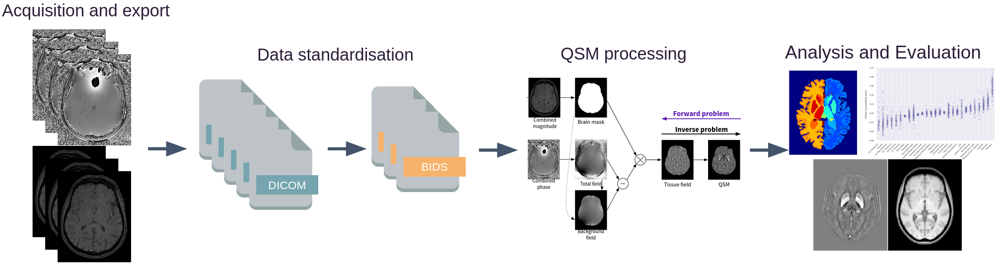

QSMxT Example#
Author: Ashley Stewart
Original paper: https://onlinelibrary.wiley.com/doi/10.1002/mrm.29048
Setup Neurodesk#
%%capture
import os
import sys
IN_COLAB = 'google.colab' in sys.modules
if IN_COLAB:
os.environ["LD_PRELOAD"] = "";
os.environ["APPTAINER_BINDPATH"] = "/content,/tmp,/cvmfs"
os.environ["MPLCONFIGDIR"] = "/content/matplotlib-mpldir"
os.environ["LMOD_CMD"] = "/usr/share/lmod/lmod/libexec/lmod"
!curl -J -O https://raw.githubusercontent.com/NeuroDesk/neurocommand/main/googlecolab_setup.sh
!chmod +x googlecolab_setup.sh
!./googlecolab_setup.sh
os.environ["MODULEPATH"] = ':'.join(map(str, list(map(lambda x: os.path.join(os.path.abspath('/cvmfs/neurodesk.ardc.edu.au/neurodesk-modules/'), x),os.listdir('/cvmfs/neurodesk.ardc.edu.au/neurodesk-modules/')))))
# Output CPU information:
!cat /proc/cpuinfo | grep 'vendor' | uniq
!cat /proc/cpuinfo | grep 'model name' | uniq
vendor_id : AuthenticAMD
model name : AMD EPYC-Rome Processor
QSMxT Interactive Notebook#
This interactive notebook estimates Quantitative Susceptibility Maps (QSMs) for two gradient-echo (GRE) MRI acquisitions using QSMxT provided by the Neurodesk project.
What is QSM?#
QSM is a form of quantitative MRI (qMRI) that estimates the magnetic susceptibility distribution across an imaged object. Magnetic susceptibility is the degree to which a material becomes magnetised by an external magnetic field. Major contributors to susceptibility include iron, calcium, and myelin, with the susceptibility of water typically approximating a zero-reference, though it is slightly diamagnetic. Read more about QSM here.
What is QSMxT?#
QSMxT is a suite of tools for building and running automated pipelines for QSM that:
is available open-source without any licensing required;
is distributed as a software container making it straightforward to access and install (Neurodesk!)
scales its processing to execute across many acquisitions through jobs parallelisation (using multiple processors or HPCs) provided by Nipype;
automates steps that usually require manual intervention and scripting, including:
DICOM to BIDS conversion;
QSM reconstruction using a range of algorithms;
segmentation using FastSurfer;
group space generation using ANTs;
export of susceptibility statistics by subject and region of interest (ROI) to CSV.

How do I access QSMxT?#
There are a few ways you can access QSMxT:
This notebook: You can access QSMxT in this notebook right now!
If you are running this on a Neurodesk Play instance, you can upload your own data into the sidebar via drag-and-drop.
Neurodesktop: QSMxT is in the applications menu of Neurodesktop.
On Neurodesk Play, upload your own data into the desktop via drag-and-drop.
On a local install of Neurodesk, bring any necessary files into the shared
~/neurodesktop-storagedirectory
Local install: QSMxT can also be installed via the Docker container
HPC install: QSMxT can also be installed via the Singularity container for use on HPCs
Download example DICOMs#
Here, we download some example DICOMs from our OSF repository for QSMxT.
These data include GRE and T1-weighted acquisitions for one subject (duplicated to act as two subjects).
!pip install osfclient
!osf -p ru43c clone . > /dev/null 2>&1
!tar xf osfstorage/dicoms-unsorted.tar
!rm -rf osfstorage/
!tree dicoms-unsorted | head
!echo -e "...\nThere are `ls dicoms-unsorted | wc -l` unsorted DICOMs in ./dicoms-unsorted/"
Defaulting to user installation because normal site-packages is not writeable
Requirement already satisfied: osfclient in /home/ubuntu/.local/lib/python3.10/site-packages (0.0.5)
Requirement already satisfied: requests in /home/ubuntu/.local/lib/python3.10/site-packages (from osfclient) (2.32.3)
Requirement already satisfied: tqdm in /usr/lib/python3/dist-packages (from osfclient) (4.57.0)
Requirement already satisfied: six in /usr/lib/python3/dist-packages (from osfclient) (1.16.0)
Requirement already satisfied: charset-normalizer<4,>=2 in /home/ubuntu/.local/lib/python3.10/site-packages (from requests->osfclient) (3.3.2)
Requirement already satisfied: idna<4,>=2.5 in /usr/lib/python3/dist-packages (from requests->osfclient) (3.3)
Requirement already satisfied: urllib3<3,>=1.21.1 in /usr/lib/python3/dist-packages (from requests->osfclient) (1.26.5)
Requirement already satisfied: certifi>=2017.4.17 in /usr/lib/python3/dist-packages (from requests->osfclient) (2020.6.20)
WARNING: Error parsing dependencies of distro-info: Invalid version: '1.1build1'
WARNING: Error parsing dependencies of python-debian: Invalid version: '0.1.43ubuntu1'
dicoms-unsorted
├── MR.1.100.dcm
├── MR.1.101.dcm
├── MR.1.102.dcm
├── MR.1.103.dcm
├── MR.1.104.dcm
├── MR.1.105.dcm
├── MR.1.106.dcm
├── MR.1.107.dcm
├── MR.1.108.dcm
...
There are 1216 unsorted DICOMs in ./dicoms-unsorted/
Load QSMxT#
To load QSMxT inside a notebook, we can use the available module system:
import lmod
await lmod.load('qsmxt/7.2.0')
!qsmxt --version
[INFO]: QSMxT v7.2.0
Data standardisation#
QSMxT requires input data to conform to the Brain Imaging Data Structure (BIDS).
Luckily, QSMxT also provides scripts that can convert unorganised NIfTI or DICOM images to BIDS. If you are using NIfTI images and do not have DICOMs, see nifti-convert.
Sort DICOMs#
Before we can convert DICOMs to BIDS cleanly, we need to sort the DICOMs by subject, session and series.
We can sort the DICOMs using dicom-sort.
Note that this script relies on accurate DICOM header information. If your data is sorted incorrectly, you may need to manually correct the sorting, or sort the files yourself. Be sure to follow the folder structure shown below.
!dicom-sort dicoms-unsorted dicoms-sorted
[INFO]: Running QSMxT 7.2.0
[INFO]: Command: /opt/miniconda-4.7.12.1/bin/dicom-sort dicoms-unsorted dicoms-sorted
[INFO]: Python interpreter: /opt/miniconda-4.7.12.1/bin/python3.8
[INFO]: Reading file list...
[INFO]: 1216 DICOM files found.
[INFO]: Sorting DICOMs in /storage/tmp/tmpv43xnkj4/dicoms-sorted...
[INFO]: Identified subject: 1
[INFO]: Identified session: 1 #1 20170705
[INFO]: Identified series: sub-1/ses-20170705/series-6_mp2rage_highRes_0p5iso_slab
[INFO]: Identified series: sub-1/ses-20170705/series-6_QSM_p2_1mmIso_TE20
[INFO]: Identified session: 2 #1 20170705
[INFO]: Identified series: sub-2/ses-20170705/series-6_QSM_p2_1mmIso_TE20
[INFO]: Identified series: sub-2/ses-20170705/series-6_mp2rage_highRes_0p5iso_slab
[INFO]: Identified series: sub-2/ses-20170705/series-5_QSM_p2_1mmIso_TE20
[INFO]: Identified series: sub-1/ses-20170705/series-5_QSM_p2_1mmIso_TE20
[INFO]: Finished
Now we can see clearly that there are two subjects, each with one session, each with three DICOM series:
!tree dicoms-sorted -L 3
dicoms-sorted
├── log_2024-10-17_00-26-37029043.txt
├── references.txt
├── sub-1
│ └── ses-20170705
│ ├── series-5_QSM_p2_1mmIso_TE20
│ ├── series-6_mp2rage_highRes_0p5iso_slab
│ └── series-6_QSM_p2_1mmIso_TE20
└── sub-2
└── ses-20170705
├── series-5_QSM_p2_1mmIso_TE20
├── series-6_mp2rage_highRes_0p5iso_slab
└── series-6_QSM_p2_1mmIso_TE20
10 directories, 2 files
Convert to BIDS#
Now that the DICOMs are sorted, we can convert to BIDS using dicom-convert.
The DICOM to BIDS conversion must identify which series should be used for QSM reconstruction (T2*-weighted), and which series should be used for segmentation (T1-weighted). Because this information is not stored in the DICOM header, the user must provide it, or QSMxT can make a guess based on the ProtocolName field. By default, QSMxT assumes series matching any of the patterns in ['*qsm*', '*t2starw*'] are to be used for QSM, and series matching the pattern ['*t1w*'] are to be used for segmentation. If series cannot be identified, the user must do so. At minimum, at least one QSM series must be identified.
If QSMxT is run interactively, the user will be prompted to identify the relevant series’. However, because we are running QSMxT in a notebook, we disable the interactivity using --auto_yes and provide the missing information using command-line arguments (--t1w_protocol_patterns and --qsm_protocol_patterns). In this case, the T1-weighted scan requires identification, so we pass --t1w_protocol_patterns "*mp2rage*":
!dicom-convert dicoms-sorted bids \
--t1w_protocol_patterns "*mp2rage*" \
--auto_yes
[INFO]: Running QSMxT 7.2.0
[INFO]: Command: /opt/miniconda-4.7.12.1/bin/dicom-convert dicoms-sorted bids --t1w_protocol_patterns *mp2rage* --auto_yes
[INFO]: Python interpreter: /opt/miniconda-4.7.12.1/bin/python3.8
[INFO]: Converting all DICOMs to NIfTI...
[INFO]: Running command: 'dcm2niix -z n -o "/storage/tmp/tmpv43xnkj4/bids/sub-2/ses-20170705/extra_data" "/storage/tmp/tmpv43xnkj4/dicoms-sorted/sub-2/ses-20170705/series-6_mp2rage_highRes_0p5iso_slab" >> "/storage/tmp/tmpv43xnkj4/bids/sub-2/ses-20170705/extra_data/dcm2niix_output.txt"'
[INFO]: Running command: 'dcm2niix -z n -o "/storage/tmp/tmpv43xnkj4/bids/sub-2/ses-20170705/extra_data" "/storage/tmp/tmpv43xnkj4/dicoms-sorted/sub-2/ses-20170705/series-6_QSM_p2_1mmIso_TE20" >> "/storage/tmp/tmpv43xnkj4/bids/sub-2/ses-20170705/extra_data/dcm2niix_output.txt"'
[INFO]: Running command: 'dcm2niix -z n -o "/storage/tmp/tmpv43xnkj4/bids/sub-2/ses-20170705/extra_data" "/storage/tmp/tmpv43xnkj4/dicoms-sorted/sub-2/ses-20170705/series-5_QSM_p2_1mmIso_TE20" >> "/storage/tmp/tmpv43xnkj4/bids/sub-2/ses-20170705/extra_data/dcm2niix_output.txt"'
[INFO]: Running command: 'dcm2niix -z n -o "/storage/tmp/tmpv43xnkj4/bids/sub-1/ses-20170705/extra_data" "/storage/tmp/tmpv43xnkj4/dicoms-sorted/sub-1/ses-20170705/series-6_mp2rage_highRes_0p5iso_slab" >> "/storage/tmp/tmpv43xnkj4/bids/sub-1/ses-20170705/extra_data/dcm2niix_output.txt"'
[INFO]: Running command: 'dcm2niix -z n -o "/storage/tmp/tmpv43xnkj4/bids/sub-1/ses-20170705/extra_data" "/storage/tmp/tmpv43xnkj4/dicoms-sorted/sub-1/ses-20170705/series-6_QSM_p2_1mmIso_TE20" >> "/storage/tmp/tmpv43xnkj4/bids/sub-1/ses-20170705/extra_data/dcm2niix_output.txt"'
[INFO]: Running command: 'dcm2niix -z n -o "/storage/tmp/tmpv43xnkj4/bids/sub-1/ses-20170705/extra_data" "/storage/tmp/tmpv43xnkj4/dicoms-sorted/sub-1/ses-20170705/series-5_QSM_p2_1mmIso_TE20" >> "/storage/tmp/tmpv43xnkj4/bids/sub-1/ses-20170705/extra_data/dcm2niix_output.txt"'
[INFO]: Loading JSON headers from '/storage/tmp/tmpv43xnkj4/bids/.../extra_data' folders...
[INFO]: Checking for GE data requiring correction...
[INFO]: Loading updated JSON headers from '/storage/tmp/tmpv43xnkj4/bids/.../extra_data' folders...
[INFO]: Enumerating protocol names from JSON headers...
[INFO]: All protocol names identified: ['mp2rage_highres_0p5iso_slab', 'qsm_p2_1mmiso_te20']
[INFO]: Enumerating protocol names with QSM intention using match patterns ['*t2starw*', '*qsm*']...
[INFO]: Identified the following protocols intended for QSM: ['qsm_p2_1mmiso_te20']
[INFO]: Enumerating T1w protocol names using match patterns ['*mp2rage*']...
[INFO]: Identified the following protocols as T1w: ['mp2rage_highres_0p5iso_slab']
[INFO]: Parsing relevant details from JSON headers...
[INFO]: Parsing relevant JSON data from sub-2/ses-20170705...
[INFO]: Parsing relevant JSON data from sub-1/ses-20170705...
Summary of identified files and proposed renames (following BIDS standard):
series-5_QSM_p2_1mmIso_TE20_QSM_p2_1mmIso_TE20_20170705134507_5
-> sub-1_ses-20170705_acq-qsmp21mmisote20_run-01_part-mag_T2starw
series-6_QSM_p2_1mmIso_TE20_QSM_p2_1mmIso_TE20_20170705134507_6_ph
-> sub-1_ses-20170705_acq-qsmp21mmisote20_run-01_part-phase_T2starw
series-6_mp2rage_highRes_0p5iso_slab_mp2rage_highRes_0p5iso_slab_20170705150219_6
-> sub-1_ses-20170705_acq-mp2ragehighres0p5isoslab_run-01_T1w
series-5_QSM_p2_1mmIso_TE20_QSM_p2_1mmIso_TE20_20170705134507_5
-> sub-2_ses-20170705_acq-qsmp21mmisote20_run-01_part-mag_T2starw
series-6_QSM_p2_1mmIso_TE20_QSM_p2_1mmIso_TE20_20170705134507_6_ph
-> sub-2_ses-20170705_acq-qsmp21mmisote20_run-01_part-phase_T2starw
series-6_mp2rage_highRes_0p5iso_slab_mp2rage_highRes_0p5iso_slab_20170705150219_6
-> sub-2_ses-20170705_acq-mp2ragehighres0p5isoslab_run-01_T1w
[INFO]: Renaming files...
[INFO]: Renaming /storage/tmp/tmpv43xnkj4/bids/sub-2/ses-20170705/extra_data/series-5_QSM_p2_1mmIso_TE20_QSM_p2_1mmIso_TE20_20170705134507_5.json -> /storage/tmp/tmpv43xnkj4/bids/sub-2/ses-20170705/anat/sub-2_ses-20170705_acq-qsmp21mmisote20_run-01_part-mag_T2starw.json
[INFO]: Renaming /storage/tmp/tmpv43xnkj4/bids/sub-2/ses-20170705/extra_data/series-5_QSM_p2_1mmIso_TE20_QSM_p2_1mmIso_TE20_20170705134507_5.nii -> /storage/tmp/tmpv43xnkj4/bids/sub-2/ses-20170705/anat/sub-2_ses-20170705_acq-qsmp21mmisote20_run-01_part-mag_T2starw.nii
[INFO]: Renaming /storage/tmp/tmpv43xnkj4/bids/sub-2/ses-20170705/extra_data/series-6_QSM_p2_1mmIso_TE20_QSM_p2_1mmIso_TE20_20170705134507_6_ph.json -> /storage/tmp/tmpv43xnkj4/bids/sub-2/ses-20170705/anat/sub-2_ses-20170705_acq-qsmp21mmisote20_run-01_part-phase_T2starw.json
[INFO]: Renaming /storage/tmp/tmpv43xnkj4/bids/sub-2/ses-20170705/extra_data/series-6_QSM_p2_1mmIso_TE20_QSM_p2_1mmIso_TE20_20170705134507_6_ph.nii -> /storage/tmp/tmpv43xnkj4/bids/sub-2/ses-20170705/anat/sub-2_ses-20170705_acq-qsmp21mmisote20_run-01_part-phase_T2starw.nii
[INFO]: Renaming /storage/tmp/tmpv43xnkj4/bids/sub-2/ses-20170705/extra_data/series-6_mp2rage_highRes_0p5iso_slab_mp2rage_highRes_0p5iso_slab_20170705150219_6.json -> /storage/tmp/tmpv43xnkj4/bids/sub-2/ses-20170705/anat/sub-2_ses-20170705_acq-mp2ragehighres0p5isoslab_run-01_T1w.json
[INFO]: Renaming /storage/tmp/tmpv43xnkj4/bids/sub-2/ses-20170705/extra_data/series-6_mp2rage_highRes_0p5iso_slab_mp2rage_highRes_0p5iso_slab_20170705150219_6.nii -> /storage/tmp/tmpv43xnkj4/bids/sub-2/ses-20170705/anat/sub-2_ses-20170705_acq-mp2ragehighres0p5isoslab_run-01_T1w.nii
[INFO]: Renaming /storage/tmp/tmpv43xnkj4/bids/sub-1/ses-20170705/extra_data/series-5_QSM_p2_1mmIso_TE20_QSM_p2_1mmIso_TE20_20170705134507_5.json -> /storage/tmp/tmpv43xnkj4/bids/sub-1/ses-20170705/anat/sub-1_ses-20170705_acq-qsmp21mmisote20_run-01_part-mag_T2starw.json
[INFO]: Renaming /storage/tmp/tmpv43xnkj4/bids/sub-1/ses-20170705/extra_data/series-5_QSM_p2_1mmIso_TE20_QSM_p2_1mmIso_TE20_20170705134507_5.nii -> /storage/tmp/tmpv43xnkj4/bids/sub-1/ses-20170705/anat/sub-1_ses-20170705_acq-qsmp21mmisote20_run-01_part-mag_T2starw.nii
[INFO]: Renaming /storage/tmp/tmpv43xnkj4/bids/sub-1/ses-20170705/extra_data/series-6_QSM_p2_1mmIso_TE20_QSM_p2_1mmIso_TE20_20170705134507_6_ph.json -> /storage/tmp/tmpv43xnkj4/bids/sub-1/ses-20170705/anat/sub-1_ses-20170705_acq-qsmp21mmisote20_run-01_part-phase_T2starw.json
[INFO]: Renaming /storage/tmp/tmpv43xnkj4/bids/sub-1/ses-20170705/extra_data/series-6_QSM_p2_1mmIso_TE20_QSM_p2_1mmIso_TE20_20170705134507_6_ph.nii -> /storage/tmp/tmpv43xnkj4/bids/sub-1/ses-20170705/anat/sub-1_ses-20170705_acq-qsmp21mmisote20_run-01_part-phase_T2starw.nii
[INFO]: Renaming /storage/tmp/tmpv43xnkj4/bids/sub-1/ses-20170705/extra_data/series-6_mp2rage_highRes_0p5iso_slab_mp2rage_highRes_0p5iso_slab_20170705150219_6.json -> /storage/tmp/tmpv43xnkj4/bids/sub-1/ses-20170705/anat/sub-1_ses-20170705_acq-mp2ragehighres0p5isoslab_run-01_T1w.json
[INFO]: Renaming /storage/tmp/tmpv43xnkj4/bids/sub-1/ses-20170705/extra_data/series-6_mp2rage_highRes_0p5iso_slab_mp2rage_highRes_0p5iso_slab_20170705150219_6.nii -> /storage/tmp/tmpv43xnkj4/bids/sub-1/ses-20170705/anat/sub-1_ses-20170705_acq-mp2ragehighres0p5isoslab_run-01_T1w.nii
[INFO]: Generating details for BIDS datset_description.json...
[INFO]: Writing BIDS dataset_description.json...
[INFO]: Writing BIDS .bidsignore file...
[INFO]: Writing BIDS dataset README...
[INFO]: Finished
!tree bids
bids
├── dataset_description.json
├── log_2024-10-17_00-26-43456049.txt
├── README
├── references.txt
├── sub-1
│ └── ses-20170705
│ ├── anat
│ │ ├── sub-1_ses-20170705_acq-mp2ragehighres0p5isoslab_run-01_T1w.json
│ │ ├── sub-1_ses-20170705_acq-mp2ragehighres0p5isoslab_run-01_T1w.nii
│ │ ├── sub-1_ses-20170705_acq-qsmp21mmisote20_run-01_part-mag_T2starw.json
│ │ ├── sub-1_ses-20170705_acq-qsmp21mmisote20_run-01_part-mag_T2starw.nii
│ │ ├── sub-1_ses-20170705_acq-qsmp21mmisote20_run-01_part-phase_T2starw.json
│ │ └── sub-1_ses-20170705_acq-qsmp21mmisote20_run-01_part-phase_T2starw.nii
│ └── extra_data
│ └── dcm2niix_output.txt
└── sub-2
└── ses-20170705
├── anat
│ ├── sub-2_ses-20170705_acq-mp2ragehighres0p5isoslab_run-01_T1w.json
│ ├── sub-2_ses-20170705_acq-mp2ragehighres0p5isoslab_run-01_T1w.nii
│ ├── sub-2_ses-20170705_acq-qsmp21mmisote20_run-01_part-mag_T2starw.json
│ ├── sub-2_ses-20170705_acq-qsmp21mmisote20_run-01_part-mag_T2starw.nii
│ ├── sub-2_ses-20170705_acq-qsmp21mmisote20_run-01_part-phase_T2starw.json
│ └── sub-2_ses-20170705_acq-qsmp21mmisote20_run-01_part-phase_T2starw.nii
└── extra_data
└── dcm2niix_output.txt
8 directories, 18 files
Inspect input data#
Here we define a function we will use to visualise NIfTI images so we can view some of the input data:
from glob import glob
def show_nii(nii_path, title=None, cmap='gray', **imshow_args):
from matplotlib import pyplot as plt
import numpy as np
import nibabel as nib
import glob
# load data\n",
data_1 = nib.load(nii_path).get_fdata()
# get middle slices\n",
slc_data1 = np.rot90(data_1[np.shape(data_1)[0]//2,:,:])
slc_data2 = np.rot90(data_1[:,np.shape(data_1)[1]//2,:])
slc_data3 = np.rot90(data_1[:,:,np.shape(data_1)[2]//2])
# show slices\n",
fig, axes = plt.subplots(nrows=1, ncols=3, figsize=(8,10))
if title: plt.suptitle(title)
axes[0].imshow(slc_data1, cmap=cmap, **imshow_args)
axes[1].imshow(slc_data2, cmap=cmap, **imshow_args)
axes[2].imshow(slc_data3, cmap=cmap, **imshow_args)
axes[0].axis('off')
axes[1].axis('off')
axes[2].axis('off')
fig.tight_layout()
fig.subplots_adjust(top=1.55)
plt.show()
show_nii(glob("bids/sub-*/ses-*/anat/*mag*nii*")[0], title="Magnitude", vmax=500)
show_nii(glob("bids/sub-*/ses-*/anat/*phase*nii*")[0], title="Phase")
show_nii(glob("bids/sub-*/ses-*/anat/*T1w*nii*")[0], title="T1-weighted")
Run QSMxT#
We are now ready to run QSMxT! We will generate susceptibility maps and segmentations, and export analysis CSVs to file.
The usual way of running QSMxT is to use qsmxt bids_dir. This will launch an interactive command-line interface (CLI) to setup your desired pipelines. However, since we are running this in a notebook, we need to use command-line arguments to by-pass the interface and execute a pipeline.
But first, let’s consider our pipeline settings. For QSM reconstruction, QSMxT provides a range of sensible defaults fit for different purposes. We can list the premade QSM pipelines using --list_premades. For the full pipeline details used for each premade pipeline, see qsm_pipelines.json.
!qsmxt --list_premades
=== Premade pipelines ===
default: Default QSMxT settings (GRE; assumes human brain)
gre: Applies suggested settings for 3D-GRE images
epi: Applies suggested settings for 3D-EPI images (assumes human brain)
bet: Applies a traditional BET-masking approach (artefact reduction unavailable; assumes human brain)
fast: Applies a set of fast algorithms
body: Applies suggested settings for non-brain applications
nextqsm: Applies suggested settings for running the NeXtQSM algorithm (assumes human brain)
[INFO]: Finished
For this demonstration, we will go with the fast pipeline. To export segmentations and analysis results, we will use --do_segmentation and --do_analysis. The --auto_yes option avoid the interactive CLI interface that cannot be used in a notebook:
!qsmxt bids \
--premade fast \
--do_qsm \
--do_segmentation \
--do_analysis \
--auto_yes
[INFO]: QSMxT v7.2.0
[INFO]: Python interpreter: /opt/miniconda-4.7.12.1/bin/python3.8
[INFO]: Command: qsmxt /storage/tmp/tmpv43xnkj4/bids --premade 'fast' --do_qsm --do_segmentation --do_analysis --auto_yes
[WARNING]: Pipeline is NOT guidelines compliant (see https://doi.org/10.1002/mrm.30006):; Phase-quality-based masking recommended
[INFO]: Available memory: 100.81 GB
[INFO]: Creating QSMxT workflow for sub-1.ses-20170705.acq-qsmp21mmisote20.run-01...
[INFO]: Creating QSMxT workflow for sub-2.ses-20170705.acq-qsmp21mmisote20.run-01...
[INFO]: Running using MultiProc plugin with n_procs=32
241017-00:27:05,745 nipype.workflow INFO:
Workflow qsmxt-workflow settings: ['check', 'execution', 'logging', 'monitoring']
241017-00:27:05,807 nipype.workflow INFO:
Running in parallel.
241017-00:27:05,823 nipype.workflow INFO:
[MultiProc] Running 0 tasks, and 12 jobs ready. Free memory (GB): 113.22/113.22, Free processors: 32/32.
241017-00:27:06,189 nipype.workflow INFO:
[Node] Setting-up "qsmxt-workflow.sub-1.ses-20170705.qsmxt_acq-qsmp21mmisote20_run-01.func_read-json-me" in "/storage/tmp/tmpv43xnkj4/bids/derivatives/qsmxt-workflow/sub-1/ses-20170705/qsmxt_acq-qsmp21mmisote20_run-01/func_read-json-me".
241017-00:27:06,210 nipype.workflow INFO:
[Node] Executing "func_read-json-me" <nipype.interfaces.utility.wrappers.Function>
241017-00:27:06,214 nipype.workflow INFO:
[Node] Finished "func_read-json-me", elapsed time 0.001432s.
241017-00:27:06,189 nipype.workflow INFO:
[Node] Setting-up "qsmxt-workflow.sub-1.ses-20170705.qsmxt_acq-qsmp21mmisote20_run-01.func_read-json-se" in "/storage/tmp/tmpv43xnkj4/bids/derivatives/qsmxt-workflow/sub-1/ses-20170705/qsmxt_acq-qsmp21mmisote20_run-01/func_read-json-se".
241017-00:27:06,190 nipype.workflow INFO:
[Node] Setting-up "qsmxt-workflow.sub-1.ses-20170705.qsmxt_acq-qsmp21mmisote20_run-01.nibabel_as-canonical" in "/storage/tmp/tmpv43xnkj4/bids/derivatives/qsmxt-workflow/sub-1/ses-20170705/qsmxt_acq-qsmp21mmisote20_run-01/nibabel_as-canonical".
241017-00:27:06,192 nipype.workflow INFO:
[Node] Setting-up "qsmxt-workflow.sub-1.ses-20170705.qsmxt_acq-qsmp21mmisote20_run-01.fastsurfer_segment-t1" in "/storage/tmp/tmpv43xnkj4/bids/derivatives/qsmxt-workflow/sub-1/ses-20170705/qsmxt_acq-qsmp21mmisote20_run-01/fastsurfer_segment-t1".
241017-00:27:06,195 nipype.workflow INFO:
[Node] Setting-up "qsmxt-workflow.sub-2.ses-20170705.qsmxt_acq-qsmp21mmisote20_run-01.fastsurfer_segment-t1" in "/storage/tmp/tmpv43xnkj4/bids/derivatives/qsmxt-workflow/sub-2/ses-20170705/qsmxt_acq-qsmp21mmisote20_run-01/fastsurfer_segment-t1".
241017-00:27:06,247 nipype.workflow INFO:
[Node] Executing "func_read-json-se" <nipype.interfaces.utility.wrappers.Function>
241017-00:27:06,249 nipype.workflow INFO:
[Node] Executing "nibabel_as-canonical" <nipype.interfaces.utility.wrappers.Function>
241017-00:27:06,251 nipype.workflow INFO:
[Node] Executing "fastsurfer_segment-t1" <qsmxt.interfaces.nipype_interface_fastsurfer.FastSurferInterface>
241017-00:27:06,251 nipype.workflow INFO:
[Node] Finished "func_read-json-se", elapsed time 0.001587s.
241017-00:27:06,253 nipype.workflow INFO:
[Node] Executing "fastsurfer_segment-t1" <qsmxt.interfaces.nipype_interface_fastsurfer.FastSurferInterface>
241017-00:27:06,189 nipype.workflow INFO:
[Node] Setting-up "qsmxt-workflow.sub-1.ses-20170705.qsmxt_acq-qsmp21mmisote20_run-01.nibabel_read-nii" in "/storage/tmp/tmpv43xnkj4/bids/derivatives/qsmxt-workflow/sub-1/ses-20170705/qsmxt_acq-qsmp21mmisote20_run-01/nibabel_read-nii".
241017-00:27:06,192 nipype.workflow INFO:
[Node] Setting-up "qsmxt-workflow.sub-2.ses-20170705.qsmxt_acq-qsmp21mmisote20_run-01.func_read-json-me" in "/storage/tmp/tmpv43xnkj4/bids/derivatives/qsmxt-workflow/sub-2/ses-20170705/qsmxt_acq-qsmp21mmisote20_run-01/func_read-json-me".
241017-00:27:06,299 nipype.workflow INFO:
[Node] Executing "nibabel_read-nii" <nipype.interfaces.utility.wrappers.Function>
241017-00:27:06,301 nipype.workflow INFO:
[Node] Executing "func_read-json-me" <nipype.interfaces.utility.wrappers.Function>
241017-00:27:06,306 nipype.workflow INFO:
[Node] Finished "func_read-json-me", elapsed time 0.001652s.
241017-00:27:06,307 nipype.workflow INFO:
[Node] Finished "nibabel_read-nii", elapsed time 0.004763s.
241017-00:27:06,193 nipype.workflow INFO:
[Node] Setting-up "qsmxt-workflow.sub-2.ses-20170705.qsmxt_acq-qsmp21mmisote20_run-01.nibabel_read-nii" in "/storage/tmp/tmpv43xnkj4/bids/derivatives/qsmxt-workflow/sub-2/ses-20170705/qsmxt_acq-qsmp21mmisote20_run-01/nibabel_read-nii".
241017-00:27:06,193 nipype.workflow INFO:
[Node] Setting-up "qsmxt-workflow.sub-2.ses-20170705.qsmxt_acq-qsmp21mmisote20_run-01.nibabel_as-canonical" in "/storage/tmp/tmpv43xnkj4/bids/derivatives/qsmxt-workflow/sub-2/ses-20170705/qsmxt_acq-qsmp21mmisote20_run-01/nibabel_as-canonical".
241017-00:27:06,352 nipype.workflow INFO:
[Node] Executing "nibabel_read-nii" <nipype.interfaces.utility.wrappers.Function>
241017-00:27:06,353 nipype.workflow INFO:
[Node] Executing "nibabel_as-canonical" <nipype.interfaces.utility.wrappers.Function>
241017-00:27:06,357 nipype.workflow INFO:
[Node] Finished "nibabel_as-canonical", elapsed time 0.105571s.
241017-00:27:06,360 nipype.workflow INFO:
[Node] Finished "nibabel_read-nii", elapsed time 0.004552s.
241017-00:27:06,365 nipype.workflow INFO:
[Node] Finished "nibabel_as-canonical", elapsed time 0.008729s.
241017-00:27:06,193 nipype.workflow INFO:
[Node] Setting-up "qsmxt-workflow.sub-1.ses-20170705.qsmxt_acq-qsmp21mmisote20_run-01.ants_register-t1-to-qsm" in "/storage/tmp/tmpv43xnkj4/bids/derivatives/qsmxt-workflow/sub-1/ses-20170705/qsmxt_acq-qsmp21mmisote20_run-01/ants_register-t1-to-qsm".
241017-00:27:06,193 nipype.workflow INFO:
[Node] Setting-up "qsmxt-workflow.sub-2.ses-20170705.qsmxt_acq-qsmp21mmisote20_run-01.func_read-json-se" in "/storage/tmp/tmpv43xnkj4/bids/derivatives/qsmxt-workflow/sub-2/ses-20170705/qsmxt_acq-qsmp21mmisote20_run-01/func_read-json-se".
241017-00:27:06,408 nipype.workflow INFO:
[Node] Executing "func_read-json-se" <nipype.interfaces.utility.wrappers.Function>
241017-00:27:06,413 nipype.workflow INFO:
[Node] Executing "ants_register-t1-to-qsm" <nipype.interfaces.ants.registration.RegistrationSynQuick>
241017-00:27:06,416 nipype.workflow INFO:
[Node] Finished "func_read-json-se", elapsed time 0.005639s.
241017-00:27:07,828 nipype.workflow INFO:
[Job 0] Completed (qsmxt-workflow.sub-1.ses-20170705.qsmxt_acq-qsmp21mmisote20_run-01.func_read-json-me).
241017-00:27:07,834 nipype.workflow INFO:
[Job 1] Completed (qsmxt-workflow.sub-1.ses-20170705.qsmxt_acq-qsmp21mmisote20_run-01.func_read-json-se).
241017-00:27:07,835 nipype.workflow INFO:
[Job 2] Completed (qsmxt-workflow.sub-1.ses-20170705.qsmxt_acq-qsmp21mmisote20_run-01.nibabel_read-nii).
241017-00:27:07,837 nipype.workflow INFO:
[Job 3] Completed (qsmxt-workflow.sub-1.ses-20170705.qsmxt_acq-qsmp21mmisote20_run-01.nibabel_as-canonical).
241017-00:27:07,838 nipype.workflow INFO:
[Job 6] Completed (qsmxt-workflow.sub-2.ses-20170705.qsmxt_acq-qsmp21mmisote20_run-01.func_read-json-me).
241017-00:27:07,840 nipype.workflow INFO:
[Job 7] Completed (qsmxt-workflow.sub-2.ses-20170705.qsmxt_acq-qsmp21mmisote20_run-01.func_read-json-se).
241017-00:27:07,841 nipype.workflow INFO:
[Job 8] Completed (qsmxt-workflow.sub-2.ses-20170705.qsmxt_acq-qsmp21mmisote20_run-01.nibabel_read-nii).
241017-00:27:07,843 nipype.workflow INFO:
[Job 9] Completed (qsmxt-workflow.sub-2.ses-20170705.qsmxt_acq-qsmp21mmisote20_run-01.nibabel_as-canonical).
241017-00:27:07,846 nipype.workflow INFO:
[MultiProc] Running 3 tasks, and 5 jobs ready. Free memory (GB): 81.22/113.22, Free processors: 10/32.
Currently running:
* qsmxt-workflow.sub-2.ses-20170705.qsmxt_acq-qsmp21mmisote20_run-01.fastsurfer_segment-t1
* qsmxt-workflow.sub-1.ses-20170705.qsmxt_acq-qsmp21mmisote20_run-01.ants_register-t1-to-qsm
* qsmxt-workflow.sub-1.ses-20170705.qsmxt_acq-qsmp21mmisote20_run-01.fastsurfer_segment-t1
241017-00:27:08,97 nipype.workflow INFO:
[Node] Setting-up "qsmxt-workflow.sub-2.ses-20170705.qsmxt_acq-qsmp21mmisote20_run-01.ants_register-t1-to-qsm" in "/storage/tmp/tmpv43xnkj4/bids/derivatives/qsmxt-workflow/sub-2/ses-20170705/qsmxt_acq-qsmp21mmisote20_run-01/ants_register-t1-to-qsm".
241017-00:27:08,99 nipype.workflow INFO:
[Node] Setting-up "qsmxt-workflow.sub-2.ses-20170705.qsmxt_acq-qsmp21mmisote20_run-01.nibabel_numpy_scale-phase" in "/storage/tmp/tmpv43xnkj4/bids/derivatives/qsmxt-workflow/sub-2/ses-20170705/qsmxt_acq-qsmp21mmisote20_run-01/nibabel_numpy_scale-phase".
241017-00:27:08,102 nipype.workflow INFO:
[Node] Setting-up "qsmxt-workflow.sub-1.ses-20170705.qsmxt_acq-qsmp21mmisote20_run-01.func_getfirst-canonical-magnitude" in "/storage/tmp/tmpv43xnkj4/bids/derivatives/qsmxt-workflow/sub-1/ses-20170705/qsmxt_acq-qsmp21mmisote20_run-01/func_getfirst-canonical-magnitude".
241017-00:27:08,111 nipype.workflow INFO:
[Node] Executing "ants_register-t1-to-qsm" <nipype.interfaces.ants.registration.RegistrationSynQuick>
241017-00:27:08,114 nipype.workflow INFO:
[Node] Executing "nibabel_numpy_scale-phase" <qsmxt.interfaces.nipype_interface_processphase.ScalePhaseInterface>
241017-00:27:08,116 nipype.workflow INFO:
[Node] Executing "func_getfirst-canonical-magnitude" <nipype.interfaces.utility.wrappers.Function>
241017-00:27:08,121 nipype.workflow INFO:
[Node] Finished "func_getfirst-canonical-magnitude", elapsed time 0.001783s.
241017-00:27:08,98 nipype.workflow INFO:
[Node] Setting-up "qsmxt-workflow.sub-2.ses-20170705.qsmxt_acq-qsmp21mmisote20_run-01.func_getfirst-canonical-magnitude" in "/storage/tmp/tmpv43xnkj4/bids/derivatives/qsmxt-workflow/sub-2/ses-20170705/qsmxt_acq-qsmp21mmisote20_run-01/func_getfirst-canonical-magnitude".
241017-00:27:08,102 nipype.workflow INFO:
[Node] Setting-up "qsmxt-workflow.sub-1.ses-20170705.qsmxt_acq-qsmp21mmisote20_run-01.nibabel_numpy_scale-phase" in "/storage/tmp/tmpv43xnkj4/bids/derivatives/qsmxt-workflow/sub-1/ses-20170705/qsmxt_acq-qsmp21mmisote20_run-01/nibabel_numpy_scale-phase".
241017-00:27:08,170 nipype.workflow INFO:
[Node] Executing "nibabel_numpy_scale-phase" <qsmxt.interfaces.nipype_interface_processphase.ScalePhaseInterface>
241017-00:27:08,171 nipype.workflow INFO:
[Node] Executing "func_getfirst-canonical-magnitude" <nipype.interfaces.utility.wrappers.Function>
241017-00:27:08,177 nipype.workflow INFO:
[Node] Finished "func_getfirst-canonical-magnitude", elapsed time 0.001708s.
241017-00:27:08,801 nipype.workflow INFO:
[Node] Finished "nibabel_numpy_scale-phase", elapsed time 0.684252s.
241017-00:27:08,841 nipype.workflow INFO:
[Node] Finished "nibabel_numpy_scale-phase", elapsed time 0.66767s.
241017-00:27:09,824 nipype.workflow INFO:
[Job 12] Completed (qsmxt-workflow.sub-1.ses-20170705.qsmxt_acq-qsmp21mmisote20_run-01.nibabel_numpy_scale-phase).
241017-00:27:09,826 nipype.workflow INFO:
[Job 13] Completed (qsmxt-workflow.sub-1.ses-20170705.qsmxt_acq-qsmp21mmisote20_run-01.func_getfirst-canonical-magnitude).
241017-00:27:09,828 nipype.workflow INFO:
[Job 15] Completed (qsmxt-workflow.sub-2.ses-20170705.qsmxt_acq-qsmp21mmisote20_run-01.nibabel_numpy_scale-phase).
241017-00:27:09,829 nipype.workflow INFO:
[Job 16] Completed (qsmxt-workflow.sub-2.ses-20170705.qsmxt_acq-qsmp21mmisote20_run-01.func_getfirst-canonical-magnitude).
241017-00:27:09,832 nipype.workflow INFO:
[MultiProc] Running 4 tasks, and 2 jobs ready. Free memory (GB): 73.22/113.22, Free processors: 4/32.
Currently running:
* qsmxt-workflow.sub-2.ses-20170705.qsmxt_acq-qsmp21mmisote20_run-01.ants_register-t1-to-qsm
* qsmxt-workflow.sub-2.ses-20170705.qsmxt_acq-qsmp21mmisote20_run-01.fastsurfer_segment-t1
* qsmxt-workflow.sub-1.ses-20170705.qsmxt_acq-qsmp21mmisote20_run-01.ants_register-t1-to-qsm
* qsmxt-workflow.sub-1.ses-20170705.qsmxt_acq-qsmp21mmisote20_run-01.fastsurfer_segment-t1
241017-00:27:09,928 nipype.workflow INFO:
[Node] Setting-up "qsmxt-workflow.sub-1.ses-20170705.qsmxt_acq-qsmp21mmisote20_run-01.nibabel_numpy_nilearn_axial-resampling" in "/storage/tmp/tmpv43xnkj4/bids/derivatives/qsmxt-workflow/sub-1/ses-20170705/qsmxt_acq-qsmp21mmisote20_run-01/nibabel_numpy_nilearn_axial-resampling".
241017-00:27:09,929 nipype.workflow INFO:
[Node] Setting-up "qsmxt-workflow.sub-2.ses-20170705.qsmxt_acq-qsmp21mmisote20_run-01.nibabel_numpy_nilearn_axial-resampling" in "/storage/tmp/tmpv43xnkj4/bids/derivatives/qsmxt-workflow/sub-2/ses-20170705/qsmxt_acq-qsmp21mmisote20_run-01/nibabel_numpy_nilearn_axial-resampling".
241017-00:27:09,938 nipype.workflow INFO:
[Node] Executing "nibabel_numpy_nilearn_axial-resampling" <qsmxt.interfaces.nipype_interface_axialsampling.AxialSamplingInterface>
241017-00:27:09,946 nipype.workflow INFO:
[Node] Finished "nibabel_numpy_nilearn_axial-resampling", elapsed time 0.005251s.
241017-00:27:09,957 nipype.workflow INFO:
[Node] Executing "nibabel_numpy_nilearn_axial-resampling" <qsmxt.interfaces.nipype_interface_axialsampling.AxialSamplingInterface>
241017-00:27:09,966 nipype.workflow INFO:
[Node] Finished "nibabel_numpy_nilearn_axial-resampling", elapsed time 0.006205s.
241017-00:27:11,827 nipype.workflow INFO:
[Job 18] Completed (qsmxt-workflow.sub-1.ses-20170705.qsmxt_acq-qsmp21mmisote20_run-01.nibabel_numpy_nilearn_axial-resampling).
241017-00:27:11,830 nipype.workflow INFO:
[Job 21] Completed (qsmxt-workflow.sub-2.ses-20170705.qsmxt_acq-qsmp21mmisote20_run-01.nibabel_numpy_nilearn_axial-resampling).
241017-00:27:11,833 nipype.workflow INFO:
[MultiProc] Running 4 tasks, and 4 jobs ready. Free memory (GB): 73.22/113.22, Free processors: 4/32.
Currently running:
* qsmxt-workflow.sub-2.ses-20170705.qsmxt_acq-qsmp21mmisote20_run-01.ants_register-t1-to-qsm
* qsmxt-workflow.sub-2.ses-20170705.qsmxt_acq-qsmp21mmisote20_run-01.fastsurfer_segment-t1
* qsmxt-workflow.sub-1.ses-20170705.qsmxt_acq-qsmp21mmisote20_run-01.ants_register-t1-to-qsm
* qsmxt-workflow.sub-1.ses-20170705.qsmxt_acq-qsmp21mmisote20_run-01.fastsurfer_segment-t1
241017-00:27:11,980 nipype.workflow INFO:
[Node] Setting-up "qsmxt-workflow.sub-1.ses-20170705.qsmxt_acq-qsmp21mmisote20_run-01.qsm_workflow.mrt_romeo" in "/storage/tmp/tmpv43xnkj4/bids/derivatives/qsmxt-workflow/sub-1/ses-20170705/qsmxt_acq-qsmp21mmisote20_run-01/qsm_workflow/mrt_romeo".
241017-00:27:11,982 nipype.workflow INFO:
[Node] Setting-up "qsmxt-workflow.sub-2.ses-20170705.qsmxt_acq-qsmp21mmisote20_run-01.qsm_workflow.mrt_romeo" in "/storage/tmp/tmpv43xnkj4/bids/derivatives/qsmxt-workflow/sub-2/ses-20170705/qsmxt_acq-qsmp21mmisote20_run-01/qsm_workflow/mrt_romeo".
241017-00:27:11,994 nipype.workflow INFO:
[Node] Executing "mrt_romeo" <qsmxt.interfaces.nipype_interface_romeo.RomeoB0Interface>
241017-00:27:11,996 nipype.workflow INFO:
[Node] Executing "mrt_romeo" <qsmxt.interfaces.nipype_interface_romeo.RomeoB0Interface>
241017-00:27:13,829 nipype.workflow INFO:
[MultiProc] Running 6 tasks, and 2 jobs ready. Free memory (GB): 68.55/113.22, Free processors: 2/32.
Currently running:
* qsmxt-workflow.sub-2.ses-20170705.qsmxt_acq-qsmp21mmisote20_run-01.qsm_workflow.mrt_romeo
* qsmxt-workflow.sub-1.ses-20170705.qsmxt_acq-qsmp21mmisote20_run-01.qsm_workflow.mrt_romeo
* qsmxt-workflow.sub-2.ses-20170705.qsmxt_acq-qsmp21mmisote20_run-01.ants_register-t1-to-qsm
* qsmxt-workflow.sub-2.ses-20170705.qsmxt_acq-qsmp21mmisote20_run-01.fastsurfer_segment-t1
* qsmxt-workflow.sub-1.ses-20170705.qsmxt_acq-qsmp21mmisote20_run-01.ants_register-t1-to-qsm
* qsmxt-workflow.sub-1.ses-20170705.qsmxt_acq-qsmp21mmisote20_run-01.fastsurfer_segment-t1
241017-00:28:04,910 nipype.workflow INFO:
[Node] Finished "mrt_romeo", elapsed time 52.914279s.
241017-00:28:05,30 nipype.workflow INFO:
[Node] Finished "mrt_romeo", elapsed time 53.031005s.
241017-00:28:05,891 nipype.workflow INFO:
[Job 25] Completed (qsmxt-workflow.sub-1.ses-20170705.qsmxt_acq-qsmp21mmisote20_run-01.qsm_workflow.mrt_romeo).
241017-00:28:05,892 nipype.workflow INFO:
[Job 28] Completed (qsmxt-workflow.sub-2.ses-20170705.qsmxt_acq-qsmp21mmisote20_run-01.qsm_workflow.mrt_romeo).
241017-00:28:05,894 nipype.workflow INFO:
[MultiProc] Running 4 tasks, and 4 jobs ready. Free memory (GB): 73.22/113.22, Free processors: 4/32.
Currently running:
* qsmxt-workflow.sub-2.ses-20170705.qsmxt_acq-qsmp21mmisote20_run-01.ants_register-t1-to-qsm
* qsmxt-workflow.sub-2.ses-20170705.qsmxt_acq-qsmp21mmisote20_run-01.fastsurfer_segment-t1
* qsmxt-workflow.sub-1.ses-20170705.qsmxt_acq-qsmp21mmisote20_run-01.ants_register-t1-to-qsm
* qsmxt-workflow.sub-1.ses-20170705.qsmxt_acq-qsmp21mmisote20_run-01.fastsurfer_segment-t1
241017-00:28:06,12 nipype.workflow INFO:
[Node] Setting-up "qsmxt-workflow.sub-1.ses-20170705.qsmxt_acq-qsmp21mmisote20_run-01.qsm_workflow.nibabel-numpy_normalize-phase" in "/storage/tmp/tmpv43xnkj4/bids/derivatives/qsmxt-workflow/sub-1/ses-20170705/qsmxt_acq-qsmp21mmisote20_run-01/qsm_workflow/nibabel-numpy_normalize-phase".
241017-00:28:06,12 nipype.workflow INFO:
[Node] Setting-up "qsmxt-workflow.sub-2.ses-20170705.qsmxt_acq-qsmp21mmisote20_run-01.qsm_workflow.nibabel-numpy_normalize-phase" in "/storage/tmp/tmpv43xnkj4/bids/derivatives/qsmxt-workflow/sub-2/ses-20170705/qsmxt_acq-qsmp21mmisote20_run-01/qsm_workflow/nibabel-numpy_normalize-phase".
241017-00:28:06,22 nipype.workflow INFO:
[Node] Executing "nibabel-numpy_normalize-phase" <qsmxt.interfaces.nipype_interface_processphase.PhaseToNormalizedInterface>
241017-00:28:06,25 nipype.workflow INFO:
[Node] Executing "nibabel-numpy_normalize-phase" <qsmxt.interfaces.nipype_interface_processphase.PhaseToNormalizedInterface>
241017-00:28:06,972 nipype.workflow INFO:
[Node] Finished "nibabel-numpy_normalize-phase", elapsed time 0.944248s.
241017-00:28:07,22 nipype.workflow INFO:
[Node] Finished "nibabel-numpy_normalize-phase", elapsed time 0.99345s.
241017-00:28:07,892 nipype.workflow INFO:
[Job 31] Completed (qsmxt-workflow.sub-1.ses-20170705.qsmxt_acq-qsmp21mmisote20_run-01.qsm_workflow.nibabel-numpy_normalize-phase).
241017-00:28:07,894 nipype.workflow INFO:
[Job 33] Completed (qsmxt-workflow.sub-2.ses-20170705.qsmxt_acq-qsmp21mmisote20_run-01.qsm_workflow.nibabel-numpy_normalize-phase).
241017-00:28:07,896 nipype.workflow INFO:
[MultiProc] Running 4 tasks, and 2 jobs ready. Free memory (GB): 73.22/113.22, Free processors: 4/32.
Currently running:
* qsmxt-workflow.sub-2.ses-20170705.qsmxt_acq-qsmp21mmisote20_run-01.ants_register-t1-to-qsm
* qsmxt-workflow.sub-2.ses-20170705.qsmxt_acq-qsmp21mmisote20_run-01.fastsurfer_segment-t1
* qsmxt-workflow.sub-1.ses-20170705.qsmxt_acq-qsmp21mmisote20_run-01.ants_register-t1-to-qsm
* qsmxt-workflow.sub-1.ses-20170705.qsmxt_acq-qsmp21mmisote20_run-01.fastsurfer_segment-t1
241017-00:30:20,45 nipype.workflow INFO:
[Node] Finished "ants_register-t1-to-qsm", elapsed time 191.929331s.
241017-00:30:22,60 nipype.workflow INFO:
[Job 11] Completed (qsmxt-workflow.sub-2.ses-20170705.qsmxt_acq-qsmp21mmisote20_run-01.ants_register-t1-to-qsm).
241017-00:30:22,66 nipype.workflow INFO:
[MultiProc] Running 3 tasks, and 2 jobs ready. Free memory (GB): 81.22/113.22, Free processors: 10/32.
Currently running:
* qsmxt-workflow.sub-2.ses-20170705.qsmxt_acq-qsmp21mmisote20_run-01.fastsurfer_segment-t1
* qsmxt-workflow.sub-1.ses-20170705.qsmxt_acq-qsmp21mmisote20_run-01.ants_register-t1-to-qsm
* qsmxt-workflow.sub-1.ses-20170705.qsmxt_acq-qsmp21mmisote20_run-01.fastsurfer_segment-t1
241017-00:30:22,176 nipype.workflow INFO:
[Node] Setting-up "qsmxt-workflow.sub-1.ses-20170705.qsmxt_acq-qsmp21mmisote20_run-01.mask_workflow.fsl-bet" in "/storage/tmp/tmpv43xnkj4/bids/derivatives/qsmxt-workflow/sub-1/ses-20170705/qsmxt_acq-qsmp21mmisote20_run-01/mask_workflow/fsl-bet".
241017-00:30:22,187 nipype.workflow INFO:
[Node] Executing "fsl-bet" <qsmxt.interfaces.nipype_interface_bet2.Bet2Interface>
241017-00:30:24,63 nipype.workflow INFO:
[MultiProc] Running 4 tasks, and 1 jobs ready. Free memory (GB): 79.22/113.22, Free processors: 2/32.
Currently running:
* qsmxt-workflow.sub-1.ses-20170705.qsmxt_acq-qsmp21mmisote20_run-01.mask_workflow.fsl-bet
* qsmxt-workflow.sub-2.ses-20170705.qsmxt_acq-qsmp21mmisote20_run-01.fastsurfer_segment-t1
* qsmxt-workflow.sub-1.ses-20170705.qsmxt_acq-qsmp21mmisote20_run-01.ants_register-t1-to-qsm
* qsmxt-workflow.sub-1.ses-20170705.qsmxt_acq-qsmp21mmisote20_run-01.fastsurfer_segment-t1
241017-00:30:27,501 nipype.workflow INFO:
[Node] Finished "ants_register-t1-to-qsm", elapsed time 201.081074s.
241017-00:30:28,69 nipype.workflow INFO:
[Job 5] Completed (qsmxt-workflow.sub-1.ses-20170705.qsmxt_acq-qsmp21mmisote20_run-01.ants_register-t1-to-qsm).
241017-00:30:28,72 nipype.workflow INFO:
[MultiProc] Running 3 tasks, and 1 jobs ready. Free memory (GB): 87.22/113.22, Free processors: 8/32.
Currently running:
* qsmxt-workflow.sub-1.ses-20170705.qsmxt_acq-qsmp21mmisote20_run-01.mask_workflow.fsl-bet
* qsmxt-workflow.sub-2.ses-20170705.qsmxt_acq-qsmp21mmisote20_run-01.fastsurfer_segment-t1
* qsmxt-workflow.sub-1.ses-20170705.qsmxt_acq-qsmp21mmisote20_run-01.fastsurfer_segment-t1
241017-00:30:28,170 nipype.workflow INFO:
[Node] Setting-up "qsmxt-workflow.sub-2.ses-20170705.qsmxt_acq-qsmp21mmisote20_run-01.mask_workflow.fsl-bet" in "/storage/tmp/tmpv43xnkj4/bids/derivatives/qsmxt-workflow/sub-2/ses-20170705/qsmxt_acq-qsmp21mmisote20_run-01/mask_workflow/fsl-bet".
241017-00:30:28,181 nipype.workflow INFO:
[Node] Executing "fsl-bet" <qsmxt.interfaces.nipype_interface_bet2.Bet2Interface>
241017-00:30:30,73 nipype.workflow INFO:
[MultiProc] Running 4 tasks, and 0 jobs ready. Free memory (GB): 85.22/113.22, Free processors: 0/32.
Currently running:
* qsmxt-workflow.sub-2.ses-20170705.qsmxt_acq-qsmp21mmisote20_run-01.mask_workflow.fsl-bet
* qsmxt-workflow.sub-1.ses-20170705.qsmxt_acq-qsmp21mmisote20_run-01.mask_workflow.fsl-bet
* qsmxt-workflow.sub-2.ses-20170705.qsmxt_acq-qsmp21mmisote20_run-01.fastsurfer_segment-t1
* qsmxt-workflow.sub-1.ses-20170705.qsmxt_acq-qsmp21mmisote20_run-01.fastsurfer_segment-t1
241017-00:30:40,538 nipype.workflow INFO:
[Node] Finished "fsl-bet", elapsed time 18.348243s.
241017-00:30:42,84 nipype.workflow INFO:
[Job 24] Completed (qsmxt-workflow.sub-1.ses-20170705.qsmxt_acq-qsmp21mmisote20_run-01.mask_workflow.fsl-bet).
241017-00:30:42,88 nipype.workflow INFO:
[MultiProc] Running 3 tasks, and 1 jobs ready. Free memory (GB): 87.22/113.22, Free processors: 8/32.
Currently running:
* qsmxt-workflow.sub-2.ses-20170705.qsmxt_acq-qsmp21mmisote20_run-01.mask_workflow.fsl-bet
* qsmxt-workflow.sub-2.ses-20170705.qsmxt_acq-qsmp21mmisote20_run-01.fastsurfer_segment-t1
* qsmxt-workflow.sub-1.ses-20170705.qsmxt_acq-qsmp21mmisote20_run-01.fastsurfer_segment-t1
241017-00:30:42,174 nipype.workflow INFO:
[Node] Setting-up "qsmxt-workflow.sub-1.ses-20170705.qsmxt_acq-qsmp21mmisote20_run-01.mask_workflow.scipy_numpy_nibabel_bet_erode" in "/storage/tmp/tmpv43xnkj4/bids/derivatives/qsmxt-workflow/sub-1/ses-20170705/qsmxt_acq-qsmp21mmisote20_run-01/mask_workflow/scipy_numpy_nibabel_bet_erode".
241017-00:30:42,182 nipype.workflow INFO:
[Node] Executing "scipy_numpy_nibabel_bet_erode" <qsmxt.interfaces.nipype_interface_erode.ErosionInterface>
241017-00:30:43,179 nipype.workflow INFO:
[Node] Finished "scipy_numpy_nibabel_bet_erode", elapsed time 0.993967s.
241017-00:30:44,86 nipype.workflow INFO:
[Job 30] Completed (qsmxt-workflow.sub-1.ses-20170705.qsmxt_acq-qsmp21mmisote20_run-01.mask_workflow.scipy_numpy_nibabel_bet_erode).
241017-00:30:44,89 nipype.workflow INFO:
[MultiProc] Running 3 tasks, and 1 jobs ready. Free memory (GB): 87.22/113.22, Free processors: 8/32.
Currently running:
* qsmxt-workflow.sub-2.ses-20170705.qsmxt_acq-qsmp21mmisote20_run-01.mask_workflow.fsl-bet
* qsmxt-workflow.sub-2.ses-20170705.qsmxt_acq-qsmp21mmisote20_run-01.fastsurfer_segment-t1
* qsmxt-workflow.sub-1.ses-20170705.qsmxt_acq-qsmp21mmisote20_run-01.fastsurfer_segment-t1
241017-00:30:44,178 nipype.workflow INFO:
[Node] Setting-up "qsmxt-workflow.sub-1.ses-20170705.qsmxt_acq-qsmp21mmisote20_run-01.qsm_workflow.qsmjl_vsharp" in "/storage/tmp/tmpv43xnkj4/bids/derivatives/qsmxt-workflow/sub-1/ses-20170705/qsmxt_acq-qsmp21mmisote20_run-01/qsm_workflow/qsmjl_vsharp".
241017-00:30:44,190 nipype.workflow INFO:
[Node] Executing "qsmjl_vsharp" <qsmxt.interfaces.nipype_interface_qsmjl.VsharpInterface>
241017-00:30:44,729 nipype.workflow INFO:
[Node] Finished "fsl-bet", elapsed time 16.545696s.
241017-00:30:46,89 nipype.workflow INFO:
[Job 27] Completed (qsmxt-workflow.sub-2.ses-20170705.qsmxt_acq-qsmp21mmisote20_run-01.mask_workflow.fsl-bet).
241017-00:30:46,92 nipype.workflow INFO:
[MultiProc] Running 3 tasks, and 1 jobs ready. Free memory (GB): 87.22/113.22, Free processors: 14/32.
Currently running:
* qsmxt-workflow.sub-1.ses-20170705.qsmxt_acq-qsmp21mmisote20_run-01.qsm_workflow.qsmjl_vsharp
* qsmxt-workflow.sub-2.ses-20170705.qsmxt_acq-qsmp21mmisote20_run-01.fastsurfer_segment-t1
* qsmxt-workflow.sub-1.ses-20170705.qsmxt_acq-qsmp21mmisote20_run-01.fastsurfer_segment-t1
241017-00:30:46,212 nipype.workflow INFO:
[Node] Setting-up "qsmxt-workflow.sub-2.ses-20170705.qsmxt_acq-qsmp21mmisote20_run-01.mask_workflow.scipy_numpy_nibabel_bet_erode" in "/storage/tmp/tmpv43xnkj4/bids/derivatives/qsmxt-workflow/sub-2/ses-20170705/qsmxt_acq-qsmp21mmisote20_run-01/mask_workflow/scipy_numpy_nibabel_bet_erode".
241017-00:30:46,221 nipype.workflow INFO:
[Node] Executing "scipy_numpy_nibabel_bet_erode" <qsmxt.interfaces.nipype_interface_erode.ErosionInterface>
241017-00:30:47,7 nipype.workflow INFO:
[Node] Finished "scipy_numpy_nibabel_bet_erode", elapsed time 0.783491s.
241017-00:30:48,90 nipype.workflow INFO:
[Job 32] Completed (qsmxt-workflow.sub-2.ses-20170705.qsmxt_acq-qsmp21mmisote20_run-01.mask_workflow.scipy_numpy_nibabel_bet_erode).
241017-00:30:48,94 nipype.workflow INFO:
[MultiProc] Running 3 tasks, and 1 jobs ready. Free memory (GB): 87.22/113.22, Free processors: 14/32.
Currently running:
* qsmxt-workflow.sub-1.ses-20170705.qsmxt_acq-qsmp21mmisote20_run-01.qsm_workflow.qsmjl_vsharp
* qsmxt-workflow.sub-2.ses-20170705.qsmxt_acq-qsmp21mmisote20_run-01.fastsurfer_segment-t1
* qsmxt-workflow.sub-1.ses-20170705.qsmxt_acq-qsmp21mmisote20_run-01.fastsurfer_segment-t1
241017-00:30:48,179 nipype.workflow INFO:
[Node] Setting-up "qsmxt-workflow.sub-2.ses-20170705.qsmxt_acq-qsmp21mmisote20_run-01.qsm_workflow.qsmjl_vsharp" in "/storage/tmp/tmpv43xnkj4/bids/derivatives/qsmxt-workflow/sub-2/ses-20170705/qsmxt_acq-qsmp21mmisote20_run-01/qsm_workflow/qsmjl_vsharp".
241017-00:30:48,192 nipype.workflow INFO:
[Node] Executing "qsmjl_vsharp" <qsmxt.interfaces.nipype_interface_qsmjl.VsharpInterface>
241017-00:30:50,94 nipype.workflow INFO:
[MultiProc] Running 4 tasks, and 0 jobs ready. Free memory (GB): 85.22/113.22, Free processors: 12/32.
Currently running:
* qsmxt-workflow.sub-2.ses-20170705.qsmxt_acq-qsmp21mmisote20_run-01.qsm_workflow.qsmjl_vsharp
* qsmxt-workflow.sub-1.ses-20170705.qsmxt_acq-qsmp21mmisote20_run-01.qsm_workflow.qsmjl_vsharp
* qsmxt-workflow.sub-2.ses-20170705.qsmxt_acq-qsmp21mmisote20_run-01.fastsurfer_segment-t1
* qsmxt-workflow.sub-1.ses-20170705.qsmxt_acq-qsmp21mmisote20_run-01.fastsurfer_segment-t1
241017-00:31:10,606 nipype.workflow INFO:
[Node] Finished "qsmjl_vsharp", elapsed time 26.413691s.
241017-00:31:12,115 nipype.workflow INFO:
[Job 34] Completed (qsmxt-workflow.sub-1.ses-20170705.qsmxt_acq-qsmp21mmisote20_run-01.qsm_workflow.qsmjl_vsharp).
241017-00:31:12,119 nipype.workflow INFO:
[MultiProc] Running 3 tasks, and 1 jobs ready. Free memory (GB): 87.22/113.22, Free processors: 14/32.
Currently running:
* qsmxt-workflow.sub-2.ses-20170705.qsmxt_acq-qsmp21mmisote20_run-01.qsm_workflow.qsmjl_vsharp
* qsmxt-workflow.sub-2.ses-20170705.qsmxt_acq-qsmp21mmisote20_run-01.fastsurfer_segment-t1
* qsmxt-workflow.sub-1.ses-20170705.qsmxt_acq-qsmp21mmisote20_run-01.fastsurfer_segment-t1
241017-00:31:12,243 nipype.workflow INFO:
[Node] Setting-up "qsmxt-workflow.sub-1.ses-20170705.qsmxt_acq-qsmp21mmisote20_run-01.qsm_workflow.qsmjl_rts" in "/storage/tmp/tmpv43xnkj4/bids/derivatives/qsmxt-workflow/sub-1/ses-20170705/qsmxt_acq-qsmp21mmisote20_run-01/qsm_workflow/qsmjl_rts".
241017-00:31:12,253 nipype.workflow INFO:
[Node] Executing "qsmjl_rts" <qsmxt.interfaces.nipype_interface_qsmjl.RtsQsmInterface>
241017-00:31:14,119 nipype.workflow INFO:
[MultiProc] Running 4 tasks, and 0 jobs ready. Free memory (GB): 84.81/113.22, Free processors: 12/32.
Currently running:
* qsmxt-workflow.sub-1.ses-20170705.qsmxt_acq-qsmp21mmisote20_run-01.qsm_workflow.qsmjl_rts
* qsmxt-workflow.sub-2.ses-20170705.qsmxt_acq-qsmp21mmisote20_run-01.qsm_workflow.qsmjl_vsharp
* qsmxt-workflow.sub-2.ses-20170705.qsmxt_acq-qsmp21mmisote20_run-01.fastsurfer_segment-t1
* qsmxt-workflow.sub-1.ses-20170705.qsmxt_acq-qsmp21mmisote20_run-01.fastsurfer_segment-t1
241017-00:31:14,344 nipype.workflow INFO:
[Node] Finished "qsmjl_vsharp", elapsed time 26.150419s.
241017-00:31:16,120 nipype.workflow INFO:
[Job 35] Completed (qsmxt-workflow.sub-2.ses-20170705.qsmxt_acq-qsmp21mmisote20_run-01.qsm_workflow.qsmjl_vsharp).
241017-00:31:16,124 nipype.workflow INFO:
[MultiProc] Running 3 tasks, and 1 jobs ready. Free memory (GB): 86.81/113.22, Free processors: 14/32.
Currently running:
* qsmxt-workflow.sub-1.ses-20170705.qsmxt_acq-qsmp21mmisote20_run-01.qsm_workflow.qsmjl_rts
* qsmxt-workflow.sub-2.ses-20170705.qsmxt_acq-qsmp21mmisote20_run-01.fastsurfer_segment-t1
* qsmxt-workflow.sub-1.ses-20170705.qsmxt_acq-qsmp21mmisote20_run-01.fastsurfer_segment-t1
241017-00:31:16,256 nipype.workflow INFO:
[Node] Setting-up "qsmxt-workflow.sub-2.ses-20170705.qsmxt_acq-qsmp21mmisote20_run-01.qsm_workflow.qsmjl_rts" in "/storage/tmp/tmpv43xnkj4/bids/derivatives/qsmxt-workflow/sub-2/ses-20170705/qsmxt_acq-qsmp21mmisote20_run-01/qsm_workflow/qsmjl_rts".
241017-00:31:16,267 nipype.workflow INFO:
[Node] Executing "qsmjl_rts" <qsmxt.interfaces.nipype_interface_qsmjl.RtsQsmInterface>
241017-00:31:18,122 nipype.workflow INFO:
[MultiProc] Running 4 tasks, and 0 jobs ready. Free memory (GB): 84.40/113.22, Free processors: 12/32.
Currently running:
* qsmxt-workflow.sub-2.ses-20170705.qsmxt_acq-qsmp21mmisote20_run-01.qsm_workflow.qsmjl_rts
* qsmxt-workflow.sub-1.ses-20170705.qsmxt_acq-qsmp21mmisote20_run-01.qsm_workflow.qsmjl_rts
* qsmxt-workflow.sub-2.ses-20170705.qsmxt_acq-qsmp21mmisote20_run-01.fastsurfer_segment-t1
* qsmxt-workflow.sub-1.ses-20170705.qsmxt_acq-qsmp21mmisote20_run-01.fastsurfer_segment-t1
241017-00:31:48,303 nipype.workflow INFO:
[Node] Finished "qsmjl_rts", elapsed time 36.048245s.
241017-00:31:48,404 nipype.workflow INFO:
[Node] Finished "qsmjl_rts", elapsed time 32.134239s.
241017-00:31:50,155 nipype.workflow INFO:
[Job 36] Completed (qsmxt-workflow.sub-1.ses-20170705.qsmxt_acq-qsmp21mmisote20_run-01.qsm_workflow.qsmjl_rts).
241017-00:31:50,157 nipype.workflow INFO:
[Job 37] Completed (qsmxt-workflow.sub-2.ses-20170705.qsmxt_acq-qsmp21mmisote20_run-01.qsm_workflow.qsmjl_rts).
241017-00:31:50,160 nipype.workflow INFO:
[MultiProc] Running 2 tasks, and 2 jobs ready. Free memory (GB): 89.22/113.22, Free processors: 16/32.
Currently running:
* qsmxt-workflow.sub-2.ses-20170705.qsmxt_acq-qsmp21mmisote20_run-01.fastsurfer_segment-t1
* qsmxt-workflow.sub-1.ses-20170705.qsmxt_acq-qsmp21mmisote20_run-01.fastsurfer_segment-t1
241017-00:31:50,319 nipype.workflow INFO:
[Node] Setting-up "qsmxt-workflow.sub-1.ses-20170705.qsmxt_acq-qsmp21mmisote20_run-01.nibabel_numpy_qsm-average" in "/storage/tmp/tmpv43xnkj4/bids/derivatives/qsmxt-workflow/sub-1/ses-20170705/qsmxt_acq-qsmp21mmisote20_run-01/nibabel_numpy_qsm-average".
241017-00:31:50,331 nipype.workflow INFO:
[Node] Executing "nibabel_numpy_qsm-average" <qsmxt.interfaces.nipype_interface_nonzeroaverage.NonzeroAverageInterface>
241017-00:31:50,334 nipype.workflow INFO:
[Node] Finished "nibabel_numpy_qsm-average", elapsed time 0.000441s.
241017-00:31:50,319 nipype.workflow INFO:
[Node] Setting-up "qsmxt-workflow.sub-2.ses-20170705.qsmxt_acq-qsmp21mmisote20_run-01.nibabel_numpy_qsm-average" in "/storage/tmp/tmpv43xnkj4/bids/derivatives/qsmxt-workflow/sub-2/ses-20170705/qsmxt_acq-qsmp21mmisote20_run-01/nibabel_numpy_qsm-average".
241017-00:31:50,379 nipype.workflow INFO:
[Node] Executing "nibabel_numpy_qsm-average" <qsmxt.interfaces.nipype_interface_nonzeroaverage.NonzeroAverageInterface>
241017-00:31:50,382 nipype.workflow INFO:
[Node] Finished "nibabel_numpy_qsm-average", elapsed time 0.000484s.
241017-00:31:52,157 nipype.workflow INFO:
[Job 38] Completed (qsmxt-workflow.sub-1.ses-20170705.qsmxt_acq-qsmp21mmisote20_run-01.nibabel_numpy_qsm-average).
241017-00:31:52,160 nipype.workflow INFO:
[Job 39] Completed (qsmxt-workflow.sub-2.ses-20170705.qsmxt_acq-qsmp21mmisote20_run-01.nibabel_numpy_qsm-average).
241017-00:31:52,162 nipype.workflow INFO:
[MultiProc] Running 2 tasks, and 2 jobs ready. Free memory (GB): 89.22/113.22, Free processors: 16/32.
Currently running:
* qsmxt-workflow.sub-2.ses-20170705.qsmxt_acq-qsmp21mmisote20_run-01.fastsurfer_segment-t1
* qsmxt-workflow.sub-1.ses-20170705.qsmxt_acq-qsmp21mmisote20_run-01.fastsurfer_segment-t1
241017-00:31:52,284 nipype.workflow INFO:
[Node] Setting-up "qsmxt-workflow.sub-1.ses-20170705.qsmxt_acq-qsmp21mmisote20_run-01.nibabel_numpy_nilearn_qsm-resampled" in "/storage/tmp/tmpv43xnkj4/bids/derivatives/qsmxt-workflow/sub-1/ses-20170705/qsmxt_acq-qsmp21mmisote20_run-01/nibabel_numpy_nilearn_qsm-resampled".
241017-00:31:52,286 nipype.workflow INFO:
[Node] Setting-up "qsmxt-workflow.sub-2.ses-20170705.qsmxt_acq-qsmp21mmisote20_run-01.nibabel_numpy_nilearn_qsm-resampled" in "/storage/tmp/tmpv43xnkj4/bids/derivatives/qsmxt-workflow/sub-2/ses-20170705/qsmxt_acq-qsmp21mmisote20_run-01/nibabel_numpy_nilearn_qsm-resampled".
241017-00:31:52,292 nipype.workflow INFO:
[Node] Executing "nibabel_numpy_nilearn_qsm-resampled" <qsmxt.interfaces.nipype_interface_resample_like.ResampleLikeInterface>
Resampling /storage/tmp/tmpv43xnkj4/bids/derivatives/qsmxt-workflow/sub-1/ses-20170705/qsmxt_acq-qsmp21mmisote20_run-01/qsm_workflow/qsmjl_rts/sub-1_ses-20170705_acq-qsmp21mmisote20_run-01_part-phase_T2starw_scaled_romeo-unwrapped_normalized_vsharp_rts.nii to /storage/tmp/tmpv43xnkj4/bids/sub-1/ses-20170705/anat/sub-1_ses-20170705_acq-qsmp21mmisote20_run-01_part-phase_T2starw.nii with interpolation continuous
241017-00:31:52,295 nipype.workflow INFO:
[Node] Executing "nibabel_numpy_nilearn_qsm-resampled" <qsmxt.interfaces.nipype_interface_resample_like.ResampleLikeInterface>
Resampling /storage/tmp/tmpv43xnkj4/bids/derivatives/qsmxt-workflow/sub-2/ses-20170705/qsmxt_acq-qsmp21mmisote20_run-01/qsm_workflow/qsmjl_rts/sub-2_ses-20170705_acq-qsmp21mmisote20_run-01_part-phase_T2starw_scaled_romeo-unwrapped_normalized_vsharp_rts.nii to /storage/tmp/tmpv43xnkj4/bids/sub-2/ses-20170705/anat/sub-2_ses-20170705_acq-qsmp21mmisote20_run-01_part-phase_T2starw.nii with interpolation continuous
Loaded input and reference files
Input image is already aligned with the reference image
Loaded input and reference files
Input image is already aligned with the reference image
241017-00:31:52,302 nipype.workflow INFO:
[Node] Finished "nibabel_numpy_nilearn_qsm-resampled", elapsed time 0.004866s.
241017-00:31:52,303 nipype.workflow INFO:
[Node] Finished "nibabel_numpy_nilearn_qsm-resampled", elapsed time 0.006215s.
241017-00:31:54,158 nipype.workflow INFO:
[Job 40] Completed (qsmxt-workflow.sub-1.ses-20170705.qsmxt_acq-qsmp21mmisote20_run-01.nibabel_numpy_nilearn_qsm-resampled).
241017-00:31:54,160 nipype.workflow INFO:
[Job 41] Completed (qsmxt-workflow.sub-2.ses-20170705.qsmxt_acq-qsmp21mmisote20_run-01.nibabel_numpy_nilearn_qsm-resampled).
241017-00:31:54,163 nipype.workflow INFO:
[MultiProc] Running 2 tasks, and 4 jobs ready. Free memory (GB): 89.22/113.22, Free processors: 16/32.
Currently running:
* qsmxt-workflow.sub-2.ses-20170705.qsmxt_acq-qsmp21mmisote20_run-01.fastsurfer_segment-t1
* qsmxt-workflow.sub-1.ses-20170705.qsmxt_acq-qsmp21mmisote20_run-01.fastsurfer_segment-t1
241017-00:31:54,284 nipype.workflow INFO:
[Node] Setting-up "qsmxt-workflow.sub-1.ses-20170705.qsmxt_acq-qsmp21mmisote20_run-01.nibabel_numpy_qsm-referenced" in "/storage/tmp/tmpv43xnkj4/bids/derivatives/qsmxt-workflow/sub-1/ses-20170705/qsmxt_acq-qsmp21mmisote20_run-01/nibabel_numpy_qsm-referenced".
241017-00:31:54,285 nipype.workflow INFO:
[Node] Setting-up "qsmxt-workflow.sub-1.ses-20170705.qsmxt_acq-qsmp21mmisote20_run-01.combine_lists1" in "/storage/tmp/tmpv43xnkj4/bids/derivatives/qsmxt-workflow/sub-1/ses-20170705/qsmxt_acq-qsmp21mmisote20_run-01/combine_lists1".
241017-00:31:54,289 nipype.workflow INFO:
[Node] Executing "nibabel_numpy_qsm-referenced" <qsmxt.interfaces.nipype_interface_qsm_referencing.ReferenceQSMInterface>
241017-00:31:54,292 nipype.workflow INFO:
[Node] Executing "combine_lists1" <nipype.interfaces.utility.wrappers.Function>
241017-00:31:54,296 nipype.workflow INFO:
[Node] Finished "combine_lists1", elapsed time 0.001592s.
241017-00:31:54,301 nipype.workflow INFO:
[Node] Setting-up "qsmxt-workflow.sub-2.ses-20170705.qsmxt_acq-qsmp21mmisote20_run-01.nibabel_numpy_qsm-referenced" in "/storage/tmp/tmpv43xnkj4/bids/derivatives/qsmxt-workflow/sub-2/ses-20170705/qsmxt_acq-qsmp21mmisote20_run-01/nibabel_numpy_qsm-referenced".
241017-00:31:54,302 nipype.workflow INFO:
[Node] Setting-up "qsmxt-workflow.sub-2.ses-20170705.qsmxt_acq-qsmp21mmisote20_run-01.combine_lists1" in "/storage/tmp/tmpv43xnkj4/bids/derivatives/qsmxt-workflow/sub-2/ses-20170705/qsmxt_acq-qsmp21mmisote20_run-01/combine_lists1".
241017-00:31:54,309 nipype.workflow INFO:
[Node] Executing "nibabel_numpy_qsm-referenced" <qsmxt.interfaces.nipype_interface_qsm_referencing.ReferenceQSMInterface>
241017-00:31:54,309 nipype.workflow INFO:
[Node] Executing "combine_lists1" <nipype.interfaces.utility.wrappers.Function>
241017-00:31:54,312 nipype.workflow INFO:
[Node] Finished "combine_lists1", elapsed time 0.001131s.
241017-00:31:54,952 nipype.workflow INFO:
[Node] Finished "nibabel_numpy_qsm-referenced", elapsed time 0.661182s.
241017-00:31:55,58 nipype.workflow INFO:
[Node] Finished "nibabel_numpy_qsm-referenced", elapsed time 0.747986s.
241017-00:31:56,160 nipype.workflow INFO:
[Job 42] Completed (qsmxt-workflow.sub-1.ses-20170705.qsmxt_acq-qsmp21mmisote20_run-01.nibabel_numpy_qsm-referenced).
241017-00:31:56,162 nipype.workflow INFO:
[Job 43] Completed (qsmxt-workflow.sub-1.ses-20170705.qsmxt_acq-qsmp21mmisote20_run-01.combine_lists1).
241017-00:31:56,164 nipype.workflow INFO:
[Job 44] Completed (qsmxt-workflow.sub-2.ses-20170705.qsmxt_acq-qsmp21mmisote20_run-01.nibabel_numpy_qsm-referenced).
241017-00:31:56,165 nipype.workflow INFO:
[Job 45] Completed (qsmxt-workflow.sub-2.ses-20170705.qsmxt_acq-qsmp21mmisote20_run-01.combine_lists1).
241017-00:31:56,167 nipype.workflow INFO:
[MultiProc] Running 2 tasks, and 0 jobs ready. Free memory (GB): 89.22/113.22, Free processors: 16/32.
Currently running:
* qsmxt-workflow.sub-2.ses-20170705.qsmxt_acq-qsmp21mmisote20_run-01.fastsurfer_segment-t1
* qsmxt-workflow.sub-1.ses-20170705.qsmxt_acq-qsmp21mmisote20_run-01.fastsurfer_segment-t1
241017-00:36:06,620 nipype.workflow INFO:
[Node] Finished "fastsurfer_segment-t1", elapsed time 540.365623s.
241017-00:36:08,435 nipype.workflow INFO:
[Job 4] Completed (qsmxt-workflow.sub-1.ses-20170705.qsmxt_acq-qsmp21mmisote20_run-01.fastsurfer_segment-t1).
241017-00:36:08,438 nipype.workflow INFO:
[MultiProc] Running 1 tasks, and 1 jobs ready. Free memory (GB): 101.22/113.22, Free processors: 24/32.
Currently running:
* qsmxt-workflow.sub-2.ses-20170705.qsmxt_acq-qsmp21mmisote20_run-01.fastsurfer_segment-t1
241017-00:36:08,573 nipype.workflow INFO:
[Node] Setting-up "qsmxt-workflow.sub-1.ses-20170705.qsmxt_acq-qsmp21mmisote20_run-01.numpy_numpy_nibabel_mgz2nii" in "/storage/tmp/tmpv43xnkj4/bids/derivatives/qsmxt-workflow/sub-1/ses-20170705/qsmxt_acq-qsmp21mmisote20_run-01/numpy_numpy_nibabel_mgz2nii".
241017-00:36:08,581 nipype.workflow INFO:
[Node] Executing "numpy_numpy_nibabel_mgz2nii" <qsmxt.interfaces.nipype_interface_mgz2nii.Mgz2NiiInterface>
241017-00:36:08,968 nipype.workflow INFO:
[Node] Finished "numpy_numpy_nibabel_mgz2nii", elapsed time 0.385342s.
241017-00:36:10,436 nipype.workflow INFO:
[Job 14] Completed (qsmxt-workflow.sub-1.ses-20170705.qsmxt_acq-qsmp21mmisote20_run-01.numpy_numpy_nibabel_mgz2nii).
241017-00:36:10,440 nipype.workflow INFO:
[MultiProc] Running 1 tasks, and 2 jobs ready. Free memory (GB): 101.22/113.22, Free processors: 24/32.
Currently running:
* qsmxt-workflow.sub-2.ses-20170705.qsmxt_acq-qsmp21mmisote20_run-01.fastsurfer_segment-t1
241017-00:36:10,588 nipype.workflow INFO:
[Node] Setting-up "qsmxt-workflow.sub-1.ses-20170705.qsmxt_acq-qsmp21mmisote20_run-01.nibabel_numpy_nilearn_t1w-seg-resampled" in "/storage/tmp/tmpv43xnkj4/bids/derivatives/qsmxt-workflow/sub-1/ses-20170705/qsmxt_acq-qsmp21mmisote20_run-01/nibabel_numpy_nilearn_t1w-seg-resampled".
241017-00:36:10,589 nipype.workflow INFO:
[Node] Setting-up "qsmxt-workflow.sub-1.ses-20170705.qsmxt_acq-qsmp21mmisote20_run-01.ants_transform-segmentation-to-qsm" in "/storage/tmp/tmpv43xnkj4/bids/derivatives/qsmxt-workflow/sub-1/ses-20170705/qsmxt_acq-qsmp21mmisote20_run-01/ants_transform-segmentation-to-qsm".
241017-00:36:10,597 nipype.workflow INFO:
[Node] Executing "nibabel_numpy_nilearn_t1w-seg-resampled" <qsmxt.interfaces.nipype_interface_resample_like.ResampleLikeInterface>
Resampling /storage/tmp/tmpv43xnkj4/bids/derivatives/qsmxt-workflow/sub-1/ses-20170705/qsmxt_acq-qsmp21mmisote20_run-01/fastsurfer_segment-t1/sub-1_ses-20170705_acq-mp2ragehighres0p5isoslab_run-01_T1w_dseg_nii.nii to /storage/tmp/tmpv43xnkj4/bids/sub-1/ses-20170705/anat/sub-1_ses-20170705_acq-mp2ragehighres0p5isoslab_run-01_T1w.nii with interpolation nearest
241017-00:36:10,601 nipype.workflow INFO:
[Node] Executing "ants_transform-segmentation-to-qsm" <nipype.interfaces.ants.resampling.ApplyTransforms>
Loaded input and reference files
241017-00:36:12,21 nipype.workflow INFO:
[Node] Finished "ants_transform-segmentation-to-qsm", elapsed time 1.41705s.
241017-00:36:12,439 nipype.workflow INFO:
[Job 20] Completed (qsmxt-workflow.sub-1.ses-20170705.qsmxt_acq-qsmp21mmisote20_run-01.ants_transform-segmentation-to-qsm).
241017-00:36:12,443 nipype.workflow INFO:
[MultiProc] Running 2 tasks, and 1 jobs ready. Free memory (GB): 99.22/113.22, Free processors: 23/32.
Currently running:
* qsmxt-workflow.sub-1.ses-20170705.qsmxt_acq-qsmp21mmisote20_run-01.nibabel_numpy_nilearn_t1w-seg-resampled
* qsmxt-workflow.sub-2.ses-20170705.qsmxt_acq-qsmp21mmisote20_run-01.fastsurfer_segment-t1
241017-00:36:12,596 nipype.workflow INFO:
[Node] Setting-up "qsmxt-workflow.sub-1.ses-20170705.qsmxt_acq-qsmp21mmisote20_run-01.combine_lists2" in "/storage/tmp/tmpv43xnkj4/bids/derivatives/qsmxt-workflow/sub-1/ses-20170705/qsmxt_acq-qsmp21mmisote20_run-01/combine_lists2".
241017-00:36:12,603 nipype.workflow INFO:
[Node] Executing "combine_lists2" <nipype.interfaces.utility.wrappers.Function>
241017-00:36:12,606 nipype.workflow INFO:
[Node] Finished "combine_lists2", elapsed time 0.000959s.
241017-00:36:14,441 nipype.workflow INFO:
[Job 26] Completed (qsmxt-workflow.sub-1.ses-20170705.qsmxt_acq-qsmp21mmisote20_run-01.combine_lists2).
241017-00:36:14,445 nipype.workflow INFO:
[MultiProc] Running 2 tasks, and 1 jobs ready. Free memory (GB): 99.22/113.22, Free processors: 23/32.
Currently running:
* qsmxt-workflow.sub-1.ses-20170705.qsmxt_acq-qsmp21mmisote20_run-01.nibabel_numpy_nilearn_t1w-seg-resampled
* qsmxt-workflow.sub-2.ses-20170705.qsmxt_acq-qsmp21mmisote20_run-01.fastsurfer_segment-t1
241017-00:36:14,591 nipype.workflow INFO:
[Node] Setting-up "qsmxt-workflow.sub-1.ses-20170705.qsmxt_acq-qsmp21mmisote20_run-01.create_permutations" in "/storage/tmp/tmpv43xnkj4/bids/derivatives/qsmxt-workflow/sub-1/ses-20170705/qsmxt_acq-qsmp21mmisote20_run-01/create_permutations".
241017-00:36:14,598 nipype.workflow INFO:
[Node] Executing "create_permutations" <nipype.interfaces.utility.wrappers.Function>
241017-00:36:14,600 nipype.workflow INFO:
[Node] Finished "create_permutations", elapsed time 0.000971s.
241017-00:36:15,382 nipype.workflow INFO:
[Node] Finished "fastsurfer_segment-t1", elapsed time 549.125831s.
241017-00:36:16,443 nipype.workflow INFO:
[Job 10] Completed (qsmxt-workflow.sub-2.ses-20170705.qsmxt_acq-qsmp21mmisote20_run-01.fastsurfer_segment-t1).
241017-00:36:16,446 nipype.workflow INFO:
[Job 46] Completed (qsmxt-workflow.sub-1.ses-20170705.qsmxt_acq-qsmp21mmisote20_run-01.create_permutations).
241017-00:36:16,448 nipype.workflow INFO:
[MultiProc] Running 1 tasks, and 2 jobs ready. Free memory (GB): 111.22/113.22, Free processors: 31/32.
Currently running:
* qsmxt-workflow.sub-1.ses-20170705.qsmxt_acq-qsmp21mmisote20_run-01.nibabel_numpy_nilearn_t1w-seg-resampled
241017-00:36:16,551 nipype.workflow INFO:
[Node] Setting-up "qsmxt-workflow.sub-2.ses-20170705.qsmxt_acq-qsmp21mmisote20_run-01.numpy_numpy_nibabel_mgz2nii" in "/storage/tmp/tmpv43xnkj4/bids/derivatives/qsmxt-workflow/sub-2/ses-20170705/qsmxt_acq-qsmp21mmisote20_run-01/numpy_numpy_nibabel_mgz2nii".
241017-00:36:16,560 nipype.workflow INFO:
[Node] Executing "numpy_numpy_nibabel_mgz2nii" <qsmxt.interfaces.nipype_interface_mgz2nii.Mgz2NiiInterface>
241017-00:36:16,564 nipype.workflow INFO:
[Node] Setting-up "_nibabel_numpy_analyse-qsm0" in "/storage/tmp/tmpv43xnkj4/bids/derivatives/qsmxt-workflow/sub-1/ses-20170705/qsmxt_acq-qsmp21mmisote20_run-01/nibabel_numpy_analyse-qsm/mapflow/_nibabel_numpy_analyse-qsm0".
241017-00:36:16,568 nipype.workflow INFO:
[Node] Executing "_nibabel_numpy_analyse-qsm0" <qsmxt.interfaces.nipype_interface_analyse.AnalyseInterface>
241017-00:36:16,925 nipype.workflow INFO:
[Node] Finished "numpy_numpy_nibabel_mgz2nii", elapsed time 0.362886s.
241017-00:36:18,445 nipype.workflow INFO:
[Job 17] Completed (qsmxt-workflow.sub-2.ses-20170705.qsmxt_acq-qsmp21mmisote20_run-01.numpy_numpy_nibabel_mgz2nii).
241017-00:36:18,448 nipype.workflow INFO:
[MultiProc] Running 2 tasks, and 2 jobs ready. Free memory (GB): 109.22/113.22, Free processors: 30/32.
Currently running:
* qsmxt-workflow.sub-1.ses-20170705.qsmxt_acq-qsmp21mmisote20_run-01.nibabel_numpy_analyse-qsm
* qsmxt-workflow.sub-1.ses-20170705.qsmxt_acq-qsmp21mmisote20_run-01.nibabel_numpy_nilearn_t1w-seg-resampled
241017-00:36:18,532 nipype.workflow INFO:
[Node] Setting-up "qsmxt-workflow.sub-2.ses-20170705.qsmxt_acq-qsmp21mmisote20_run-01.nibabel_numpy_nilearn_t1w-seg-resampled" in "/storage/tmp/tmpv43xnkj4/bids/derivatives/qsmxt-workflow/sub-2/ses-20170705/qsmxt_acq-qsmp21mmisote20_run-01/nibabel_numpy_nilearn_t1w-seg-resampled".
241017-00:36:18,534 nipype.workflow INFO:
[Node] Setting-up "qsmxt-workflow.sub-2.ses-20170705.qsmxt_acq-qsmp21mmisote20_run-01.ants_transform-segmentation-to-qsm" in "/storage/tmp/tmpv43xnkj4/bids/derivatives/qsmxt-workflow/sub-2/ses-20170705/qsmxt_acq-qsmp21mmisote20_run-01/ants_transform-segmentation-to-qsm".
241017-00:36:18,538 nipype.workflow INFO:
[Node] Executing "nibabel_numpy_nilearn_t1w-seg-resampled" <qsmxt.interfaces.nipype_interface_resample_like.ResampleLikeInterface>
Resampling /storage/tmp/tmpv43xnkj4/bids/derivatives/qsmxt-workflow/sub-2/ses-20170705/qsmxt_acq-qsmp21mmisote20_run-01/fastsurfer_segment-t1/sub-2_ses-20170705_acq-mp2ragehighres0p5isoslab_run-01_T1w_dseg_nii.nii to /storage/tmp/tmpv43xnkj4/bids/sub-2/ses-20170705/anat/sub-2_ses-20170705_acq-mp2ragehighres0p5isoslab_run-01_T1w.nii with interpolation nearest
Loaded input and reference files
241017-00:36:18,544 nipype.workflow INFO:
[Node] Executing "ants_transform-segmentation-to-qsm" <nipype.interfaces.ants.resampling.ApplyTransforms>
241017-00:36:19,558 nipype.workflow INFO:
[Node] Finished "ants_transform-segmentation-to-qsm", elapsed time 1.01193s.
Resampled the image
241017-00:36:20,448 nipype.workflow INFO:
[Job 23] Completed (qsmxt-workflow.sub-2.ses-20170705.qsmxt_acq-qsmp21mmisote20_run-01.ants_transform-segmentation-to-qsm).
241017-00:36:20,451 nipype.workflow INFO:
[MultiProc] Running 3 tasks, and 1 jobs ready. Free memory (GB): 107.22/113.22, Free processors: 29/32.
Currently running:
* qsmxt-workflow.sub-2.ses-20170705.qsmxt_acq-qsmp21mmisote20_run-01.nibabel_numpy_nilearn_t1w-seg-resampled
* qsmxt-workflow.sub-1.ses-20170705.qsmxt_acq-qsmp21mmisote20_run-01.nibabel_numpy_analyse-qsm
* qsmxt-workflow.sub-1.ses-20170705.qsmxt_acq-qsmp21mmisote20_run-01.nibabel_numpy_nilearn_t1w-seg-resampled
241017-00:36:20,534 nipype.workflow INFO:
[Node] Setting-up "qsmxt-workflow.sub-2.ses-20170705.qsmxt_acq-qsmp21mmisote20_run-01.combine_lists2" in "/storage/tmp/tmpv43xnkj4/bids/derivatives/qsmxt-workflow/sub-2/ses-20170705/qsmxt_acq-qsmp21mmisote20_run-01/combine_lists2".
241017-00:36:20,541 nipype.workflow INFO:
[Node] Executing "combine_lists2" <nipype.interfaces.utility.wrappers.Function>
241017-00:36:20,545 nipype.workflow INFO:
[Node] Finished "combine_lists2", elapsed time 0.001485s.
Saved resampled image to /storage/tmp/tmpv43xnkj4/bids/derivatives/qsmxt-workflow/sub-1/ses-20170705/qsmxt_acq-qsmp21mmisote20_run-01/nibabel_numpy_nilearn_t1w-seg-resampled/sub-1_ses-20170705_acq-mp2ragehighres0p5isoslab_run-01_T1w_dseg_nii_resampled.nii
241017-00:36:20,606 nipype.workflow INFO:
[Node] Finished "nibabel_numpy_nilearn_t1w-seg-resampled", elapsed time 10.007299s.
241017-00:36:22,450 nipype.workflow INFO:
[Job 19] Completed (qsmxt-workflow.sub-1.ses-20170705.qsmxt_acq-qsmp21mmisote20_run-01.nibabel_numpy_nilearn_t1w-seg-resampled).
241017-00:36:22,453 nipype.workflow INFO:
[Job 29] Completed (qsmxt-workflow.sub-2.ses-20170705.qsmxt_acq-qsmp21mmisote20_run-01.combine_lists2).
241017-00:36:22,455 nipype.workflow INFO:
[MultiProc] Running 2 tasks, and 1 jobs ready. Free memory (GB): 109.22/113.22, Free processors: 30/32.
Currently running:
* qsmxt-workflow.sub-2.ses-20170705.qsmxt_acq-qsmp21mmisote20_run-01.nibabel_numpy_nilearn_t1w-seg-resampled
* qsmxt-workflow.sub-1.ses-20170705.qsmxt_acq-qsmp21mmisote20_run-01.nibabel_numpy_analyse-qsm
241017-00:36:22,557 nipype.workflow INFO:
[Node] Setting-up "qsmxt-workflow.sub-2.ses-20170705.qsmxt_acq-qsmp21mmisote20_run-01.create_permutations" in "/storage/tmp/tmpv43xnkj4/bids/derivatives/qsmxt-workflow/sub-2/ses-20170705/qsmxt_acq-qsmp21mmisote20_run-01/create_permutations".
241017-00:36:22,565 nipype.workflow INFO:
[Node] Executing "create_permutations" <nipype.interfaces.utility.wrappers.Function>
241017-00:36:22,568 nipype.workflow INFO:
[Node] Finished "create_permutations", elapsed time 0.001131s.
241017-00:36:24,452 nipype.workflow INFO:
[Job 47] Completed (qsmxt-workflow.sub-2.ses-20170705.qsmxt_acq-qsmp21mmisote20_run-01.create_permutations).
241017-00:36:24,456 nipype.workflow INFO:
[MultiProc] Running 2 tasks, and 1 jobs ready. Free memory (GB): 109.22/113.22, Free processors: 30/32.
Currently running:
* qsmxt-workflow.sub-2.ses-20170705.qsmxt_acq-qsmp21mmisote20_run-01.nibabel_numpy_nilearn_t1w-seg-resampled
* qsmxt-workflow.sub-1.ses-20170705.qsmxt_acq-qsmp21mmisote20_run-01.nibabel_numpy_analyse-qsm
241017-00:36:24,554 nipype.workflow INFO:
[Node] Setting-up "_nibabel_numpy_analyse-qsm0" in "/storage/tmp/tmpv43xnkj4/bids/derivatives/qsmxt-workflow/sub-2/ses-20170705/qsmxt_acq-qsmp21mmisote20_run-01/nibabel_numpy_analyse-qsm/mapflow/_nibabel_numpy_analyse-qsm0".
241017-00:36:24,557 nipype.workflow INFO:
[Node] Executing "_nibabel_numpy_analyse-qsm0" <qsmxt.interfaces.nipype_interface_analyse.AnalyseInterface>
241017-00:36:26,455 nipype.workflow INFO:
[MultiProc] Running 3 tasks, and 0 jobs ready. Free memory (GB): 107.22/113.22, Free processors: 29/32.
Currently running:
* qsmxt-workflow.sub-2.ses-20170705.qsmxt_acq-qsmp21mmisote20_run-01.nibabel_numpy_analyse-qsm
* qsmxt-workflow.sub-2.ses-20170705.qsmxt_acq-qsmp21mmisote20_run-01.nibabel_numpy_nilearn_t1w-seg-resampled
* qsmxt-workflow.sub-1.ses-20170705.qsmxt_acq-qsmp21mmisote20_run-01.nibabel_numpy_analyse-qsm
Resampled the image
Saved resampled image to /storage/tmp/tmpv43xnkj4/bids/derivatives/qsmxt-workflow/sub-2/ses-20170705/qsmxt_acq-qsmp21mmisote20_run-01/nibabel_numpy_nilearn_t1w-seg-resampled/sub-2_ses-20170705_acq-mp2ragehighres0p5isoslab_run-01_T1w_dseg_nii_resampled.nii
241017-00:36:27,606 nipype.workflow INFO:
[Node] Finished "nibabel_numpy_nilearn_t1w-seg-resampled", elapsed time 9.066469s.
241017-00:36:28,457 nipype.workflow INFO:
[Job 22] Completed (qsmxt-workflow.sub-2.ses-20170705.qsmxt_acq-qsmp21mmisote20_run-01.nibabel_numpy_nilearn_t1w-seg-resampled).
241017-00:36:28,460 nipype.workflow INFO:
[MultiProc] Running 2 tasks, and 0 jobs ready. Free memory (GB): 109.22/113.22, Free processors: 30/32.
Currently running:
* qsmxt-workflow.sub-2.ses-20170705.qsmxt_acq-qsmp21mmisote20_run-01.nibabel_numpy_analyse-qsm
* qsmxt-workflow.sub-1.ses-20170705.qsmxt_acq-qsmp21mmisote20_run-01.nibabel_numpy_analyse-qsm
241017-00:37:23,103 nipype.workflow INFO:
[Node] Finished "_nibabel_numpy_analyse-qsm0", elapsed time 66.532605s.
241017-00:37:23,465 nipype.workflow INFO:
[Node] Finished "_nibabel_numpy_analyse-qsm0", elapsed time 58.906181s.
241017-00:37:24,518 nipype.workflow INFO:
[Job 48] Completed (qsmxt-workflow.sub-1.ses-20170705.qsmxt_acq-qsmp21mmisote20_run-01.nibabel_numpy_analyse-qsm).
241017-00:37:24,521 nipype.workflow INFO:
[Job 49] Completed (qsmxt-workflow.sub-2.ses-20170705.qsmxt_acq-qsmp21mmisote20_run-01.nibabel_numpy_analyse-qsm).
241017-00:37:24,524 nipype.workflow INFO:
[MultiProc] Running 0 tasks, and 2 jobs ready. Free memory (GB): 113.22/113.22, Free processors: 32/32.
241017-00:37:24,632 nipype.workflow INFO:
[Node] Setting-up "qsmxt-workflow.sub-1.ses-20170705.qsmxt_acq-qsmp21mmisote20_run-01.copyfile" in "/storage/tmp/tmpv43xnkj4/bids/derivatives/qsmxt-workflow/sub-1/ses-20170705/qsmxt_acq-qsmp21mmisote20_run-01/copyfile".
241017-00:37:24,633 nipype.workflow INFO:
[Node] Setting-up "qsmxt-workflow.sub-2.ses-20170705.qsmxt_acq-qsmp21mmisote20_run-01.copyfile" in "/storage/tmp/tmpv43xnkj4/bids/derivatives/qsmxt-workflow/sub-2/ses-20170705/qsmxt_acq-qsmp21mmisote20_run-01/copyfile".
241017-00:37:24,645 nipype.workflow INFO:
[Node] Executing "copyfile" <qsmxt.interfaces.nipype_interface_copyfile.DynamicCopyFiles>
241017-00:37:24,645 nipype.workflow INFO:
[Node] Executing "copyfile" <qsmxt.interfaces.nipype_interface_copyfile.DynamicCopyFiles>
241017-00:37:25,35 nipype.workflow INFO:
[Node] Finished "copyfile", elapsed time 0.387037s.
241017-00:37:25,48 nipype.workflow INFO:
[Node] Finished "copyfile", elapsed time 0.401004s.
241017-00:37:26,521 nipype.workflow INFO:
[Job 50] Completed (qsmxt-workflow.sub-1.ses-20170705.qsmxt_acq-qsmp21mmisote20_run-01.copyfile).
241017-00:37:26,524 nipype.workflow INFO:
[Job 51] Completed (qsmxt-workflow.sub-2.ses-20170705.qsmxt_acq-qsmp21mmisote20_run-01.copyfile).
241017-00:37:26,526 nipype.workflow INFO:
[MultiProc] Running 0 tasks, and 0 jobs ready. Free memory (GB): 113.22/113.22, Free processors: 32/32.
[INFO]: Warnings occurred!
[INFO]: Finished
View results#
Let’s have a look at the generated qsm folder:
!tree bids/derivatives/qsmxt-*-* --dirsfirst
bids/derivatives/qsmxt-2024-10-17-002701
├── sub-1
│ └── ses-20170705
│ ├── anat
│ │ ├── sub-1_ses-20170705_run-01_acq-qsmp21mmisote20_Chimap.nii
│ │ ├── sub-1_ses-20170705_run-01_acq-qsmp21mmisote20_space-orig_dseg.nii
│ │ └── sub-1_ses-20170705_run-01_acq-qsmp21mmisote20_space-qsm_dseg.nii
│ └── extra_data
│ ├── sub-1_ses-20170705_run-01_acq-qsmp21mmisote20_desc-t1w-to-qsm_transform.mat
│ └── sub-1_ses-20170705_run-01_acq-qsmp21mmisote20_qsm-analysis.csv
├── sub-2
│ └── ses-20170705
│ ├── anat
│ │ ├── sub-2_ses-20170705_run-01_acq-qsmp21mmisote20_Chimap.nii
│ │ ├── sub-2_ses-20170705_run-01_acq-qsmp21mmisote20_space-orig_dseg.nii
│ │ └── sub-2_ses-20170705_run-01_acq-qsmp21mmisote20_space-qsm_dseg.nii
│ └── extra_data
│ ├── sub-2_ses-20170705_run-01_acq-qsmp21mmisote20_desc-t1w-to-qsm_transform.mat
│ └── sub-2_ses-20170705_run-01_acq-qsmp21mmisote20_qsm-analysis.csv
├── command.txt
├── pypeline.log
├── qsmxt.log
├── references.txt
└── settings.json
8 directories, 15 files
The references.txt file contains a list of all the algorithms used and relevant citations:
!cat bids/derivatives/qsmxt-*-*/references.txt
== References ==
- QSMxT: Stewart AW, Robinson SD, O'Brien K, et al. QSMxT: Robust masking and artifact reduction for quantitative susceptibility mapping. Magnetic Resonance in Medicine. 2022;87(3):1289-1300. doi:10.1002/mrm.29048
- QSMxT: Stewart AW, Bollman S, et al. QSMxT/QSMxT. GitHub; 2022. https://github.com/QSMxT/QSMxT
- Python package - Nipype: Gorgolewski K, Burns C, Madison C, et al. Nipype: A Flexible, Lightweight and Extensible Neuroimaging Data Processing Framework in Python. Frontiers in Neuroinformatics. 2011;5. Accessed April 20, 2022. doi:10.3389/fninf.2011.00013
- Brain extraction: Smith SM. Fast robust automated brain extraction. Human Brain Mapping. 2002;17(3):143-155. doi:10.1002/hbm.10062
- Brain extraction: Liangfu Chen. liangfu/bet2 - Standalone Brain Extraction Tool. GitHub; 2015. https://github.com/liangfu/bet2
- Unwrapping algorithm - ROMEO: Dymerska B, Eckstein K, Bachrata B, et al. Phase unwrapping with a rapid opensource minimum spanning tree algorithm (ROMEO). Magnetic Resonance in Medicine. 2021;85(4):2294-2308. doi:10.1002/mrm.28563
- Background field removal - V-SHARP: Wu B, Li W, Guidon A et al. Whole brain susceptibility mapping using compressed sensing. Magnetic resonance in medicine. 2012 Jan;67(1):137-47. doi:10.1002/mrm.23000
- QSM algorithm - RTS: Kames C, Wiggermann V, Rauscher A. Rapid two-step dipole inversion for susceptibility mapping with sparsity priors. Neuroimage. 2018 Feb 15;167:276-83. doi:10.1016/j.neuroimage.2017.11.018
- Julia package - QSM.jl: kamesy. GitHub; 2022. https://github.com/kamesy/QSM.jl
- Julia package - MriResearchTools: Eckstein K. korbinian90/MriResearchTools.jl. GitHub; 2022. https://github.com/korbinian90/MriResearchTools.jl
- Python package - nibabel: Brett M, Markiewicz CJ, Hanke M, et al. nipy/nibabel. GitHub; 2019. https://github.com/nipy/nibabel
- Python package - scipy: Virtanen P, Gommers R, Oliphant TE, et al. SciPy 1.0: fundamental algorithms for scientific computing in Python. Nat Methods. 2020;17(3):261-272. doi:10.1038/s41592-019-0686-2
- Python package - numpy: Harris CR, Millman KJ, van der Walt SJ, et al. Array programming with NumPy. Nature. 2020;585(7825):357-362. doi:10.1038/s41586-020-2649-2
- FastSurfer: Henschel L, Conjeti S, Estrada S, Diers K, Fischl B, Reuter M. FastSurfer - A fast and accurate deep learning based neuroimaging pipeline. NeuroImage. 2020;219:117012. doi:10.1016/j.neuroimage.2020.117012
- ANTs: Avants BB, Tustison NJ, Johnson HJ. Advanced Normalization Tools. GitHub; 2022. https://github.com/ANTsX/ANTs
Let’s view one of the QSM results:
QSM results#
show_nii(glob("bids/derivatives/qsmxt-*-*/sub*/ses*/anat*/*Chimap.nii*")[0], cmap='gray', vmin=-0.15, vmax=+0.15, interpolation='nearest')
Segmentations#
Segmentations are generated in both the QSM space and the T1-weighted space. Transformations are also made available.
show_nii(glob("bids/derivatives/qsmxt-2*/sub*/ses*/anat*/*dseg.nii*")[0], cmap='terrain', vmin=0, vmax=96, interpolation='nearest')
Analysis CSVs#
CSV files have been exported containing susceptibility values in regions of interest for each subject.
Here we will load the CSVs, inspect the data and generate figures:
!pip install seaborn numpy nibabel pandas matplotlib
Defaulting to user installation because normal site-packages is not writeable
Requirement already satisfied: seaborn in /home/ubuntu/.local/lib/python3.10/site-packages (0.13.2)
Requirement already satisfied: numpy in /home/ubuntu/.local/lib/python3.10/site-packages (1.26.2)
Requirement already satisfied: nibabel in /home/ubuntu/.local/lib/python3.10/site-packages (5.2.0)
Requirement already satisfied: pandas in /home/ubuntu/.local/lib/python3.10/site-packages (2.1.4)
Requirement already satisfied: matplotlib in /home/ubuntu/.local/lib/python3.10/site-packages (3.8.2)
Requirement already satisfied: packaging>=17 in /usr/lib/python3/dist-packages (from nibabel) (21.3)
Requirement already satisfied: python-dateutil>=2.8.2 in /home/ubuntu/.local/lib/python3.10/site-packages (from pandas) (2.8.2)
Requirement already satisfied: pytz>=2020.1 in /usr/lib/python3/dist-packages (from pandas) (2022.1)
Requirement already satisfied: tzdata>=2022.1 in /home/ubuntu/.local/lib/python3.10/site-packages (from pandas) (2023.3)
Requirement already satisfied: contourpy>=1.0.1 in /home/ubuntu/.local/lib/python3.10/site-packages (from matplotlib) (1.2.0)
Requirement already satisfied: cycler>=0.10 in /home/ubuntu/.local/lib/python3.10/site-packages (from matplotlib) (0.12.1)
Requirement already satisfied: fonttools>=4.22.0 in /home/ubuntu/.local/lib/python3.10/site-packages (from matplotlib) (4.47.0)
Requirement already satisfied: kiwisolver>=1.3.1 in /home/ubuntu/.local/lib/python3.10/site-packages (from matplotlib) (1.4.5)
Requirement already satisfied: pillow>=8 in /usr/local/lib/python3.10/dist-packages (from matplotlib) (10.4.0)
Requirement already satisfied: pyparsing>=2.3.1 in /usr/lib/python3/dist-packages (from matplotlib) (2.4.7)
Requirement already satisfied: six>=1.5 in /usr/lib/python3/dist-packages (from python-dateutil>=2.8.2->pandas) (1.16.0)
WARNING: Error parsing dependencies of distro-info: Invalid version: '1.1build1'
WARNING: Error parsing dependencies of python-debian: Invalid version: '0.1.43ubuntu1'
# import modules
import numpy as np
import nibabel as nib
import pandas as pd
import seaborn as sns
from matplotlib import pyplot as plt
from glob import glob
The raw CSV files use names from FreeSurfer as exported by FastSurfer. The full list of regions is available here.
pd.read_csv(glob("bids/derivatives/qsmxt-*-*/sub*/ses*/extra*/*.csv")[0])
| roi | num_voxels | min | max | median | mean | std | |
|---|---|---|---|---|---|---|---|
| 0 | 3rd-Ventricle | 588 | -0.234913 | 0.125160 | -0.019423 | -0.022966 | 0.034550 |
| 1 | 4th-Ventricle | 1575 | -0.126959 | 0.052167 | -0.048024 | -0.048387 | 0.029387 |
| 2 | Brain-Stem | 18926 | -0.279218 | 0.103292 | -0.044952 | -0.040974 | 0.028750 |
| 3 | CSF | 845 | -1.393660 | 0.945973 | 0.024735 | 0.026914 | 0.140478 |
| 4 | Left-Accumbens-area | 511 | -0.142032 | 0.128779 | 0.021214 | 0.020016 | 0.030764 |
| ... | ... | ... | ... | ... | ... | ... | ... |
| 91 | ctx-rh-superiorfrontal | 29619 | -0.133657 | 0.252094 | -0.003920 | -0.009276 | 0.024496 |
| 92 | ctx-rh-superiorparietal | 12042 | -0.084345 | 0.306848 | -0.016232 | -0.015008 | 0.022154 |
| 93 | ctx-rh-superiortemporal | 16403 | -0.090617 | 0.248823 | 0.005659 | 0.012770 | 0.024235 |
| 94 | ctx-rh-supramarginal | 12046 | -0.082152 | 0.240121 | 0.018802 | 0.019429 | 0.023173 |
| 95 | ctx-rh-transversetemporal | 1256 | -0.003080 | 0.130236 | 0.035160 | 0.035982 | 0.013613 |
96 rows × 7 columns
We will select a subset of these ROIs and give them more readable names:
# define regions of interest
# see https://github.com/QSMxT/QSMxT/blob/master/aseg_labels.csv for a full list
rois = {
"Thalamus" : [9, 10, 48, 49],
"Pallidum" : [12, 13, 52, 53],
"Caudate" : [11, 50],
"Putamen" : [12, 51],
"Brain stem" : [16],
"CSF" : [24, 122, 257, 701],
"White matter" : [2, 7, 41, 46, 177]
}
roi_names = { value: key for key in rois for value in rois[key] }
roi_ids = [value for roi in rois.values() for value in roi]
# load a reconstruction
qsm = nib.load(glob("bids/derivatives/qsmxt-*-*/sub*/ses*/anat*/*Chimap.nii*")[0]).get_fdata().flatten()
seg = nib.load(glob("bids/derivatives/qsmxt-*-*/sub*/ses*/anat*/*dseg.nii*")[0]).get_fdata().flatten()
# retain only the rois
qsm = qsm[np.isin(seg, roi_ids)]
seg = seg[np.isin(seg, roi_ids)]
---------------------------------------------------------------------------
IndexError Traceback (most recent call last)
Cell In[22], line 2
1 # retain only the rois
----> 2 qsm = qsm[np.isin(seg, roi_ids)]
3 seg = seg[np.isin(seg, roi_ids)]
File ~/.local/lib/python3.10/site-packages/numpy/core/memmap.py:335, in memmap.__getitem__(self, index)
334 def __getitem__(self, index):
--> 335 res = super().__getitem__(index)
336 if type(res) is memmap and res._mmap is None:
337 return res.view(type=ndarray)
IndexError: boolean index did not match indexed array along dimension 0; dimension is 8028160 but corresponding boolean dimension is 45722880
# convert to a dataframe for plotting purposes
seg = pd.Series(seg).map(roi_names)
data = pd.DataFrame({ 'qsm' : qsm, 'seg' : seg })
---------------------------------------------------------------------------
ValueError Traceback (most recent call last)
Cell In[23], line 3
1 # convert to a dataframe for plotting purposes
2 seg = pd.Series(seg).map(roi_names)
----> 3 data = pd.DataFrame({ 'qsm' : qsm, 'seg' : seg })
File ~/.local/lib/python3.10/site-packages/pandas/core/frame.py:733, in DataFrame.__init__(self, data, index, columns, dtype, copy)
727 mgr = self._init_mgr(
728 data, axes={"index": index, "columns": columns}, dtype=dtype, copy=copy
729 )
731 elif isinstance(data, dict):
732 # GH#38939 de facto copy defaults to False only in non-dict cases
--> 733 mgr = dict_to_mgr(data, index, columns, dtype=dtype, copy=copy, typ=manager)
734 elif isinstance(data, ma.MaskedArray):
735 from numpy.ma import mrecords
File ~/.local/lib/python3.10/site-packages/pandas/core/internals/construction.py:503, in dict_to_mgr(data, index, columns, dtype, typ, copy)
499 else:
500 # dtype check to exclude e.g. range objects, scalars
501 arrays = [x.copy() if hasattr(x, "dtype") else x for x in arrays]
--> 503 return arrays_to_mgr(arrays, columns, index, dtype=dtype, typ=typ, consolidate=copy)
File ~/.local/lib/python3.10/site-packages/pandas/core/internals/construction.py:114, in arrays_to_mgr(arrays, columns, index, dtype, verify_integrity, typ, consolidate)
111 if verify_integrity:
112 # figure out the index, if necessary
113 if index is None:
--> 114 index = _extract_index(arrays)
115 else:
116 index = ensure_index(index)
File ~/.local/lib/python3.10/site-packages/pandas/core/internals/construction.py:690, in _extract_index(data)
685 if lengths[0] != len(index):
686 msg = (
687 f"array length {lengths[0]} does not match index "
688 f"length {len(index)}"
689 )
--> 690 raise ValueError(msg)
691 else:
692 index = default_index(lengths[0])
ValueError: array length 8028160 does not match index length 45722880
# summarise data by region including the average and standard deviation
data.groupby('seg')['qsm'].agg(['mean', 'std']).sort_values('mean').round(decimals=3)
---------------------------------------------------------------------------
NameError Traceback (most recent call last)
Cell In[24], line 2
1 # summarise data by region including the average and standard deviation
----> 2 data.groupby('seg')['qsm'].agg(['mean', 'std']).sort_values('mean').round(decimals=3)
NameError: name 'data' is not defined
medians = data.groupby('seg')['qsm'].median().sort_values()
order = medians.index
---------------------------------------------------------------------------
NameError Traceback (most recent call last)
Cell In[25], line 1
----> 1 medians = data.groupby('seg')['qsm'].median().sort_values()
2 order = medians.index
NameError: name 'data' is not defined
# plot
fig, ax = plt.subplots()
sns.boxplot(data=data, y='qsm', x='seg', fliersize=0, color='lightblue', order=order, ax=ax)
ax.set_xticks(range(len(ax.get_xticks()))) # Set tick positions explicitly
ax.set_xticklabels(ax.get_xticklabels(), ha='right', rotation=45)
ax.set_ylim(-0.2, 0.3)
ax.axhline(y=0, color='pink', linestyle='-', linewidth=1, zorder=-1)
ax.set_xlabel("Region of interest")
ax.set_ylabel("Susceptibility (ppm)")
ax.set_title("QSM")
plt.show()
---------------------------------------------------------------------------
NameError Traceback (most recent call last)
Cell In[26], line 3
1 # plot
2 fig, ax = plt.subplots()
----> 3 sns.boxplot(data=data, y='qsm', x='seg', fliersize=0, color='lightblue', order=order, ax=ax)
4 ax.set_xticks(range(len(ax.get_xticks()))) # Set tick positions explicitly
5 ax.set_xticklabels(ax.get_xticklabels(), ha='right', rotation=45)
NameError: name 'data' is not defined